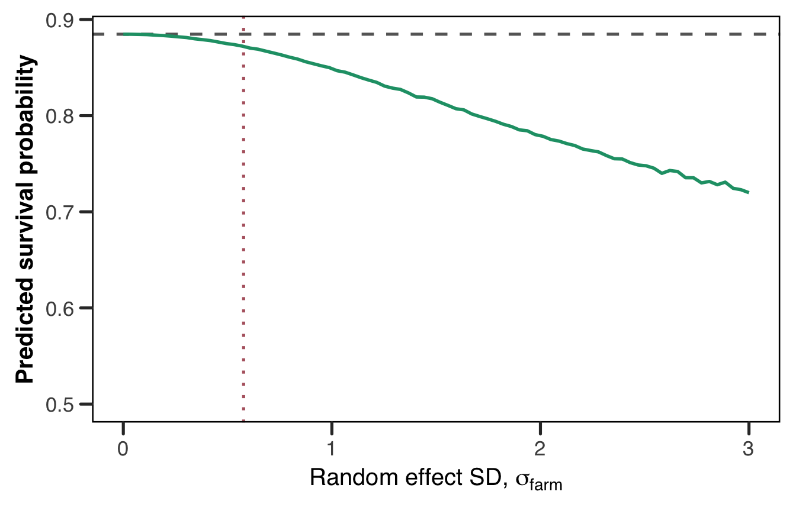
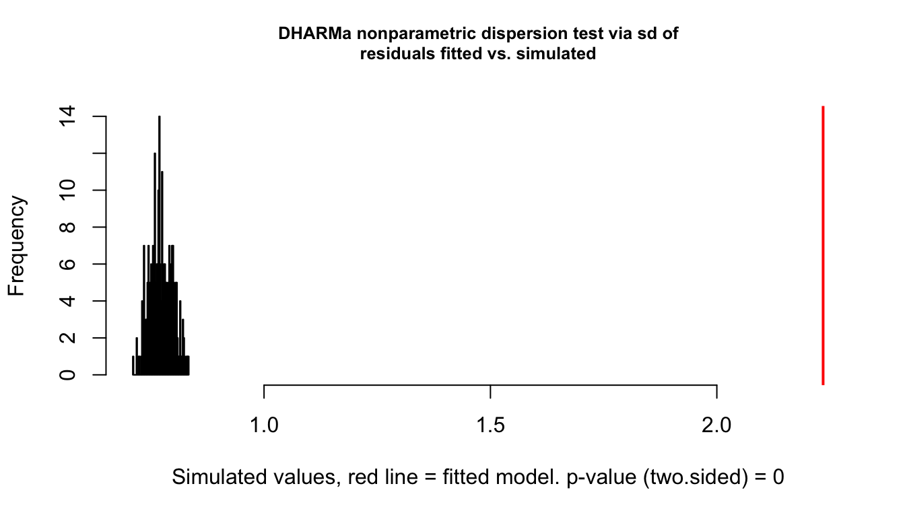
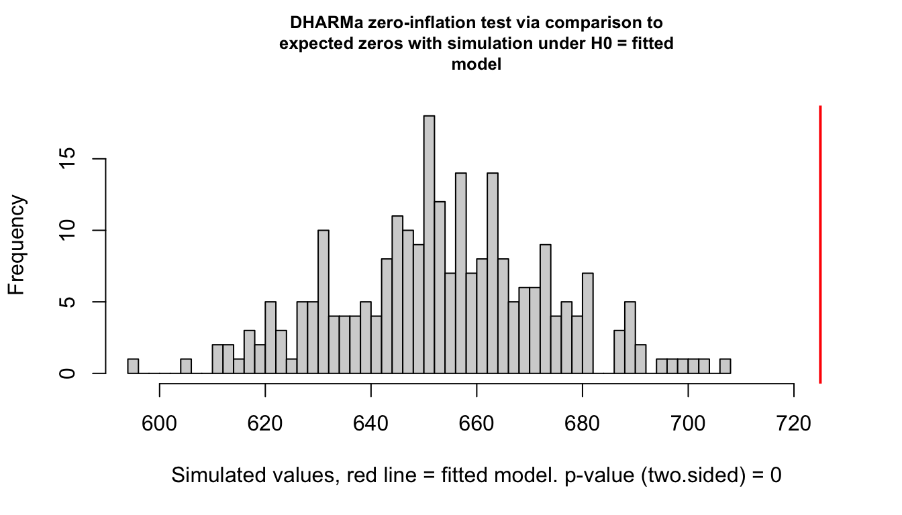
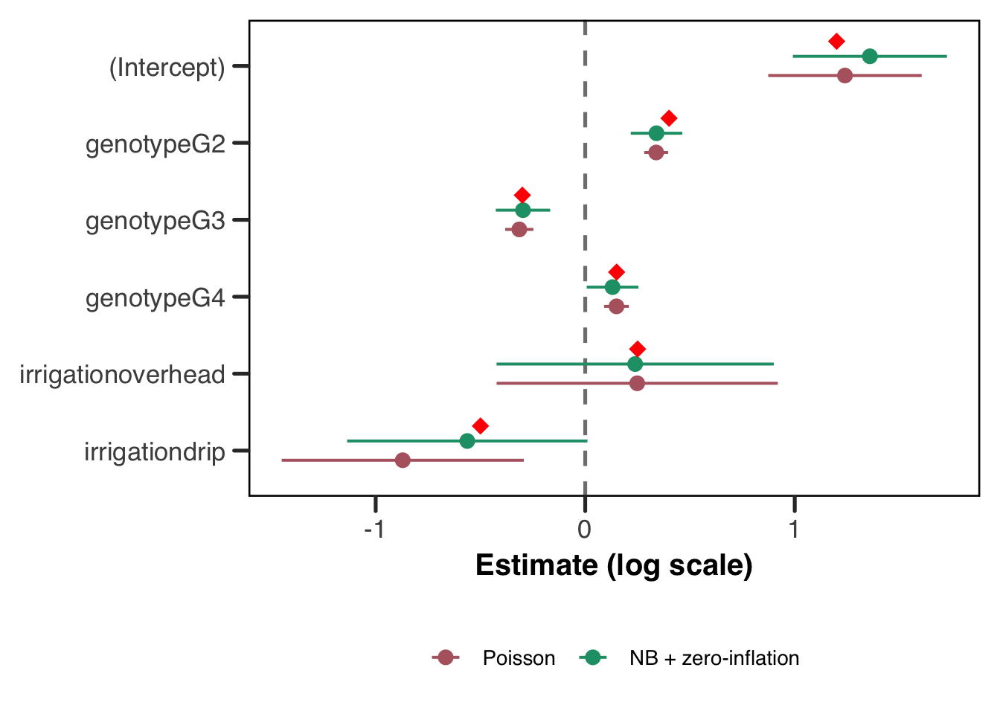

# the (1 | farm) term gives each farm its own
# intercept on the log-odds scale, which absorbs the between-farm variation
# we have no way of measuring directly
fit_tmb <- glmmTMB::glmmTMB(
survival ~ genotype + irrigation + (1 | farm),
data = plants,
family = binomial(link = "logit")
)
summary(fit_tmb)
# coefficients come out on the log-odds scale, so exponentiate them if you
# want odds ratios, which are the thing most people actually want to report
exp(glmmTMB::fixef(fit_tmb)$cond)Generalized Mixed-Effects Models
Abstract
This research guide provides a comprehensive introduction to the generalization of mixed-effects models beyond the linear case. We begin with a brief recapitulation of the special nature of mixed-effects models, and then work through the intuition and mathematics behind advancing these approaches from just a linear assumption to a broader class of models. We then treat the fitting of these models in practice, working primarily in R with glmmTMB and lme4, with a shorter implementation in Julia using MixedModels.jl. Python and Stata users will find equivalent commands in the appendix.
Keywords
glmm, generalized linear models, generalized linear mixed-effects models, hierarchical models, multilevel models, random effects, variance components, clustered data, R, Julia, lme4, MixedModels.jl, glmmTMB, TMB,
Introduction
The generalized linear mixed-effects model (GLMM) is a formulation of a statistical model that represents the extension of two other extended forms of simple linear models: the generalized linear model (GLM) and the linear mixed-effects model (usually referred to as just a “mixed-effects” model). The GLMM represents a useful extension past these two simplified form as it encompasses both (1) mixed effects (that is, fixed and random effects), and (2) a generalized response distribution, such that the statistical model itself can be related to the response distribution via a link function. First formalized as the GLM by modern statistical pioneers Peter McCullagh and John Nelder (McCullagh and Nelder 1989), and developed into the commonly agreed upon formulation by N. E. Breslow and Clayton (1993), the term “GLMM” refers to the most flexible form of linear regression available to us.
These models are a bit of a double-edged sword; they represent a large class of very powerful models, but are also, the most general parametric form of a likelihood-based linear regression, and so it is surprisingly easy to specify a model for which there is not an efficient or effective way to do estimation. This is mostly because they allow for such high levels of flexibility in both the outcome distribution and the dependence structure.
The fast path
If you have grouped data, a non-Gaussian response, and you would like to be fitting a model in the next two minutes, start here. Everything after this box is the explanation of why it works.
The running example throughout this guide is plant survival, recorded as 0 or 1, for plants grouped within farms. Genotype varies plant to plant, irrigation method varies farm to farm. The model is
\[\text{logit}(\mu_{ij}) = \beta_0 + \beta_{\text{geno}[ij]} + \beta_{\text{irr}[i]} + b_i, \qquad b_i \sim \mathcal{N}(0, \sigma^2_{\text{farm}})\]
with \(i\) indexing farms and \(j\) indexing plants within a farm. The data are available here.
lme4::glmer() accepts an identical formula if you prefer that package. An odds ratio above 1 means higher odds of survival relative to the reference level, below 1 means lower. Odds ratios are still not probabilities, and our section on interpretation covers the back-transformation you will want before reporting anything to a non-statistical audience.
Two warnings account for most of the trouble people hit with these models. boundary (singular) fit means the estimated random effect variance has collapsed to zero and your grouping structure is doing no work, which is covered in the FAQ on singular fits. A convergence failure usually means the random effects structure is too complex for the data you have, covered in the FAQ on convergence.
If the model ran and neither warning appeared, you are in reasonable shape. Read on for what the estimates mean, how much to trust them, and what the model is doing underneath.
Definition - GLMM
A generalized linear mixed-effects model is a model that, in theory, allows for a response variable to take any distribution in the exponential family, which we transform via a link function. It also supports complex forms of the predictor variable, with the inclusion of both fixed effects and random effects. Here, fixed effects are used to mean the effects or coefficients that are identical for all groups in a population, and random effects are those which are allowed to differ from group to group (Gelman 2005). More on random effects below.
One important habit worth adopting when working with any model in this class: wherever possible, write down your model explicitly rather than relying on its colloquial name. We have more to say on this in the appendix, but the short version is that naming conventions differ across disciplines in ways that can cause confusion, and a written probability model is unambiguous in a way that a label never quite is.
A note on what to expect from the code. We work in R throughout, using glmmTMB as the default and lme4 alongside it, since the two are the packages you are most likely to encounter and comparing them is instructive in its own right. We fit the same model in Julia with MixedModels.jl later on, partly because it is a genuinely good tool and partly because agreement between two independent implementations is worth seeing. Python and Stata are not worked through, but there is a table of equivalent commands in the appendix, along with a frank note about where the other ecosystems currently stop.
What a GLMM can (and can’t!) do
The utility of GLMMs covers a wide swath of problems across disciplines, and includes two very common types of response distributions: (1) count data, and (2) binary data. Alongside these two response variables, we can handle repeated measures, nested designs, and longitudinal data with this approach.1
It is, however, important to point out up front what a GLMM cannot do. The “generalized” in GLMM refers specifically to the ability to accommodate response distributions in the exponential family with a link function2 — not to flexibility in any broader sense. The model is still fundamentally linear on the link-transformed scale, meaning predictors enter additively with constant coefficients, and the framework has no inherent ability to capture truly nonlinear mean structures. Common structures of this kind that are better modeled with other tools are asymptotic growth curves, dose-response relationships with inflection points, or other phenomena where the functional form is inherently nonlinear. For those situations, nonlinear mixed effects models are more appropriate. The model is also not inherently flexible in a machine learning type of way.
Unhelpfully, the reader might feel as though the scope of the GLMM, from this short introduction, is both incredibly wide and also quite narrow. This is in many ways true, and requires some delicacy in both (a) our selection or rejection of a GLMM as a suitable tool for our problem, and (b) the inference using a model like this. GLMMs are actually relatively new to the statistical universe, their formalism was only brought together by N. E. Breslow and Clayton (1993), building on the GLM framework set out (in an excellent text worth a read) by McCullagh and Nelder (1989). Given that they are both new on the scene and so flexible, their implementation is an active area of statistical research.
In the rest of this guide we will try to summarize some of the important theoretical underpinnings of a GLMM, and then discuss some important considerations in the implementation of these models. While we will try to compare and contrast various estimation procedures, as noted above, accurately doing estimation for GLMMs is an active area of research, so we err on the side of more established methods and implementation tools, though the adventurous modeler may check out the FAQs for pointers to some newer approaches.
flowchart LR
Q1{"Non-normal response?<br/>binary, count, proportion"}
Q2{"Observations grouped?<br/>grouped or repeated"}
Q3{"Linear on link scale?<br/>no inherent curve"}
E1["Linear models<br/>OLS or LMM"]
E2["GLM<br/>no clustering"]
E3["NLMM<br/>nonlinear mean"]
GLMM["GLMM<br/>continue with this guide"]
Q1 -->|Yes| Q2
Q1 -->|No| E1
Q2 -->|Yes| Q3
Q2 -->|No| E2
Q3 -->|Yes| GLMM
Q3 -->|No| E3
classDef question fill:#F1EFE8,stroke:#888780,color:#2C2C2A
classDef exit fill:#EEEDFE,stroke:#7F77DD,color:#3C3489
classDef outcome fill:#E1F5EE,stroke:#1D9E75,color:#085041
class Q1,Q2,Q3 question
class E1,E2,E3 exit
class GLMM outcome
linkStyle default stroke:#2C2C2A,stroke-width:1.5px,fill:none
Methods
Theoretical Intuition
Ultimately, we are best served, when thinking about a new model or approach, by starting with a motivating example. Suppose in some midwestern American state, each farmer plants some number of plants on their farm. They meticulously keep track of the survival of a given plant through the course of the growing season, and at the end of the growing season they have survival data for each plant. These are obviously very small farms or very industrious farmers…
Since these data are considered to be Bernoulli (i.e. composed of 0s and 1s), it is likely that our primary assumption of standard linear regression (that of normality) is immediately violated. If you need a refresher on what that assumption actually entails, and on the other core assumptions of the linear model, we recommend reviewing the OLS regression guide before continuing. In brief, the four assumptions of the linear model encoded in \(\mathbf{Y}|\mathbf{X} \sim \mathcal{N}(\mathbf{X}\boldsymbol{\beta}, \sigma^2\mathbf{I})\) are: normality of errors, linearity of the mean in the predictors, homoscedasticity, and independence of observations. Bernoulli data violate the first three immediately because the support is \(\{0,1\}\) rather than \(\mathbb{R}\), and the variance \(p(1-p)\) depends on the mean rather than being constant.
Recall: the assumptions of the linear model
The full details of what the normality assumption (and the other assumptions) actually entail are covered in the OLS regression guide. The key point for our purposes is that the assumption is not that the raw response data are normally distributed, but that \(Y_i | \mathbf{x}_i \sim \mathcal{N}(\mathbf{x}_i^\top \boldsymbol{\beta}, \sigma^2)\) — that is, the conditional distribution of \(Y_i\) given the predictors is normal, with constant variance and a mean that is linear in the predictors. Binary data violate all three of these properties.
Generalizing the Linear Caseelsewhere
Since we have data that we know to be 0s or 1s, we could write that saying that our data, \(y\), are Bernoulli distributed:
\[\begin{equation} y_i \sim \text{Bernoulli}(p) \end{equation}\]
where the distribution is of a random variable that can take 1 with probability \(p \in [0,1]\), and 0 with probability \(q=1-p\). With only this information we can intuit that our data on plant survival will be poorly suited for a standard linear model — the support is \(\{0,1\}\) rather than \(\mathbb{R}\), and the variance \(p(1-p)\) depends on the mean rather than being constant. We need a new approach.
The tool that resolves this is a link function — a monotone, differentiable function \(g\) that maps the conditional mean \(\mu = \text{E}(Y \mid \mathbf{x})\) to the linear predictor \(\eta\), allowing us to model a bounded response on an unconstrained scale. If you need a full treatment of link functions, log-odds, and the logistic transformation, the logit/probit guide covers these in detail and is worth reading before continuing. For our purposes here, the key point is that we are carrying over the linear predictor \(\eta = \mathbf{X}\boldsymbol{\beta}\) from the standard linear model, and relating it to the conditional mean of our response via:
\[\begin{equation} \text{E}(\mathbf{Y}|\mathbf{X}) = \boldsymbol{\mu} = g^{-1}(\mathbf{X}\boldsymbol{\beta}) \end{equation}\]
Returning to our motivating example, we are interested in this notion of plants surviving on a set of farms. Here’s a diagram to give an intuition of what we’re talking about:
Farm 1
🌽
🌽
🌽
🌽
🌽
🌽
Farm 2
🌽
🌽
🌽
🌽
🌽
🌽
Farm 3
🌽
🌽
🌽
🌽
🌽
🌽
We know that each of our observations are bernoulli so we’ve had to extend our linear model to account for our different response distribution. However, we also have a hierarchical structure here – our observations are grouped between farms. It’s likely that each of these farms are different in important ways. Perhaps a given farmer uses a different pesticide on all his crops, employs a different irrigation strategy etc. This means there’s likely variation that is shared between plants on the same farm that we need to account for.
In a formal sense what this means is that we need to reconsider the last of the four major assumptions of a linear model, that of independence of errors, and understand that it is (importantly) violated in this hierarchical structure.
Recall the last assumption - independence of errors
Above we went over three of the major assumptions of the linear model and discussed why our data already violate the assumption of normality. These three assumptions were expressed for a single observation \(Y_i\). However, we obviously have many plants, and predictor variables with measurements for each plant. It’s useful to write this in matrix notation. If you need a brief refresher on the details of matrix notation, see the appendix on the topic. For the full response vector \(\mathbf{Y}\), the probability model becomes:
\[\begin{equation} \mathbf{Y}|\mathbf{X} \sim \mathcal{N}(\mathbf{X}\boldsymbol{\beta}, \sigma^2\mathbf{I}) \end{equation}\]
The identity matrix3 \(\mathbf{I}\) here encodes a fourth assumption: that observations are independent of one another. The off-diagonal4 zeros in \(\mathbf{I}\) mean there is no covariance between \(Y_i\) and \(Y_j\) for \(i \neq j\). When this assumption is violated — for instance with repeated measures or hierarchical data, we need to come up with another level of complexity to adequately fit our model.
As we have written about elsewhere, when we have this kind of hierarchy embedded in our data, we can no longer use the same tools as simple linear regression, mainly because our correlation structure means that we will have bias in the variance estimates of the slope coefficients (Liang and Zeger 1993). To deal with this, we turn to an old friend, random effects.
Random Effects (Again…)
Random effects have received some treatment in other guides, but it’s worth re-hashing their definition here. As a reminder, with respect to a regression model, ascribing a regression coefficient as a random effect vs a fixed effect is not some intrinsic property of the data, but refers to how we care to treat the data with respect to what inference we wish to make. The key component of random effects as a concept is that they represent an underlying assumption, philosophically, about the data being modeled. As attributed to Schabenberger and Pierce (2001), “one modeler’s random effect is another modeler’s fixed effect.” The philosophical commitment that comes with treating a coefficient as a random effect is that the groups in your data are understood as draws from a probability distribution, rather than as fixed, exhaustively enumerated entities. In our farm example, this means we are not making claims specific to the 25 farms we happened to observe — we are treating those farms as a sample from a broader population of farms, and the random effect distribution \(\mathbf{b} \sim \mathcal{N}(\mathbf{0}, G)\) describes the variation across that population.
Typically, random effects are unobservable random variables that take some distribution, which we tend to denote as \(\mathbf{b} \sim \mathcal{N}(\mathbf{0}, G)\), where \(G\) is a covariance matrix describing the variance and covariance structure of the random effects. Readers coming from our guide on linear mixed-effects models will have seen this same matrix written as \(\Sigma_\theta\), a notation that emphasises its dependence on the variance-component parameter \(\theta\); the two names refer to the same object, and we use \(G\) here to keep the notation compact in the likelihood expressions below. The full linear mixed-effects model extends the standard linear model by adding a random effects term:
\[\begin{equation} \mathbf{y} = \mathbf{X}\boldsymbol{\beta} + \mathbf{Z}\mathbf{b} + \boldsymbol{\epsilon} \end{equation}\]
The two design matrices \(\mathbf{X}\) and \(\mathbf{Z}\) play analogous but distinct roles here. A design matrix is simply a structured matrix of predictor values that, when multiplied by a coefficient vector, produces a linear predictor. \(\mathbf{X}\) is the \(n \times p\) fixed-effects design matrix, where each row contains the predictor values \(\mathbf{x}_i^\top\) for observation \(i\) — the same structure as in the standard linear model. \(\mathbf{Z}\) is the \(n \times q\) random-effects design matrix, encoding which random effect applies to which observation. For instance, in a model with random intercepts by subject, \(\mathbf{Z}\) would contain indicator columns assigning each observation to its corresponding subject. In our farm example, \(\mathbf{b}\) is a vector with one entry per farm, and each entry \(b_i\) is that farm’s random intercept — a shift up or down on the log-odds scale that captures everything about farm \(i\) that affects plant survival but isn’t explained by genotype or irrigation. A farm with a large positive \(b_i\) is one where plants tend to survive better than the population average for reasons the model doesn’t explicitly account for such as soil quality, microclimate, farmer skill, and so on. A negative \(b_i\) means the opposite. Recall though that we never observe these values directly; we only infer them from the pattern of survival outcomes on each farm.
So, what are we actually trying to estimate? This is where the mixed-effects model differs importantly from standard linear regression. The quantities of interest are:
- \(\boldsymbol{\beta}\) — the fixed-effects parameter vector, estimated in the usual sense; these are the population-level coefficients we wish to make inference about
- \(G\) — the covariance matrix of the random effects, which describes how much variability exists between groups or clusters in the data
- \(\sigma^2\) — the residual variance, describing observation-level noise after accounting for both fixed and random effects
- \(\mathbf{b}\) — the random effects themselves are not estimated in the classical sense, but are instead predicted as realisations of the distribution \(\mathcal{N}(\mathbf{0}, G)\); this distinction matters because we are not treating them as free parameters to be optimised over, but as random variables whose distribution we are characterising
The parameters \(\boldsymbol{\beta}\), \(G\), and \(\sigma^2\) are collectively referred to as the model parameters, and are typically estimated via maximum likelihood (ML) or restricted maximum likelihood (REML). The random effects \(\mathbf{b}\) are then recovered as best linear unbiased predictors (BLUPs), conditional on the estimated model parameters.
What do we mean by estimated vs. predicted here?
The distinction between estimation and prediction here is subtle but important. Fixed effects \(\boldsymbol{\beta}\) are unknown constants (in the frequentist setting) — they are properties of the population, and we estimate them by finding the values that best explain the observed data. Random effects \(\mathbf{b}\), by contrast, are realisations of a random variable: they are not fixed constants of the population, but specific draws from the distribution \(\mathcal{N}(\mathbf{0}, G)\) that happened to occur in our sample. We therefore do not estimate them in the likelihood sense, but predict them — that is, we ask: given the observed data \(\mathbf{y}\) and the estimated model parameters, what is the most probable value of \(\mathbf{b}\)?
Formally, BLUPs are the conditional mode, the value of \(\mathbf{b}\) that maximizes the denisty of \(\mathbf{b | y}\). Note that \(\text{E}(\mathbf{b} \mid \mathbf{y})\), and they have a shrinkage property: because \(\mathbf{b}\) is assumed to come from a distribution centred at \(\mathbf{0}\), group-level predictions are pulled towards zero relative to what a fixed-effects estimator would give. This shrinkage is more pronounced for groups with fewer observations, where the data provide less information to pull the prediction away from the prior mean.
So we said that our data hierarchy violates our independent errors assumption. Our random effects deal with this nicely. To summarize how that happens, ultimately, we’re saying that there are “groups” in our data (in our case, farms), that have a set of observations which are more similar to each other than to observations in other group. If we simply fit a linear (or even generalized linear) model, we’re asking our error term, \(\boldsymbol{\epsilon}\) to pick up that error, which we’ve outlined above, is not independent, and therefore violates our assumption. This random effect addresses this by giving each group its own random effect \(b_i\), such that \(\mathbf{Z}\mathbf{b}\) absorbs the group-level variation.
Formalizing our Model
Note
If you don’t especially care about the formal notation behind the model we’re using, you may want to skip to the Implementation section below. However, we do encourage even the less mathematically inclined to take a stab at reading through this section. With great computational power (i.e. the modern laptop) comes great responsibility, and we believe you and your science will be best served by gaining at least a little intuition on how this model is going to work.
If you do decide to skip this section, we highly recommend you at least glance over the link function section below 😄
Alright, so we know at this point, we need two things to deal with our farm data. We need to account for the bernoulli response distribution, which we’ll do with a link function, and we need to account for our error non-independence with a random effect. We now have the tools to write down our model. Let’s say that our survival data, \(\mathbf{Y}\) still has the linear predictor \(\eta = \mathbf{X} \boldsymbol{\beta}+ \mathbf{Z}\mathbf{b}\) which we just derived in the previous section, and that our expected value \(E(\mathbf{Y}|\mathbf{b}) = \mu = g^{-1}(\eta)\).
In general, we can say that the probability model for a GLMM is
\[\begin{equation} \mathbf{Y}|\mathbf{b} \sim \mathcal{D}(g^{-1}(\mathbf{X}\boldsymbol{\beta}+ \mathbf{Z}\mathbf{b}), \phi) \end{equation}\]
where \(\mathcal{D}\) is the distribution family (e.g. Bernoulli), which is characterized by the mean (where the mean, as we’ve seen, is \(\mu = g^{-1}(\mathbf{X}\boldsymbol{\beta}+ \mathbf{Z}\mathbf{b})\)), and a scale parameter, \(\phi\).
In our case, we don’t need a scale parameter since the Bernoulli distribution takes only one parameter. So, for our model,
\[\begin{equation} \mathbf{Y}|\mathbf{b} \sim \text{Bernoulli}(g^{-1}(\mathbf{X}\boldsymbol{\beta}+ \mathbf{Z}\mathbf{b})) \end{equation}\]
Link Functions
We have already seen, in the motivating example above, why we cannot simply apply a standard linear model to bernoulli data: the linear predictor \(\eta = \mathbf{X}\boldsymbol{\beta}\) is unbounded, ranging over \((-\infty, +\infty)\), while a probability (since our survival data is technically a probability) is constrained to \([0, 1]\). A link function is the tool that resolves this incompatibility. Formally, a link function \(g\) is a monotone5, differentiable function that maps the conditional mean \(\mu = \text{E}(Y \mid \mathbf{x})\) to the linear predictor \(\eta\), such that \(g(\mu) = \eta = \mathbf{x}^\top\boldsymbol{\beta}\). Equivalently, and as we saw in the probability model above, we can express the conditional mean as \(\mu = g^{-1}(\eta)\), where \(g^{-1}\) is the inverse link function. Importantly, we are not transforming the data — we are transforming the mean of the response distribution, allowing the linear predictor to operate on an unconstrained scale while the response itself remains on its natural scale.
The choice of link function is not arbitrary. Each distribution in the exponential family has a canonical link function, which arises naturally from the mathematical form of the distribution itself and has convenient theoretical properties for estimation. For the bernoulli distribution, the canonical link is the logit function, \(g(\mu) = \log\left(\frac{\mu}{1-\mu}\right)\), which maps probabilities in \([0,1]\) to the real line \((-\infty, +\infty)\). Its inverse, \(g^{-1}(\eta) = \frac{1}{1 + e^{-\eta}}\), is the familiar sigmoid function, which squashes the linear predictor back into a valid probability. For count data following a Poisson distribution, the canonical link is the log function, \(g(\mu) = \log(\mu)\), which maps positive means to the real line, with inverse \(g^{-1}(\eta) = e^{\eta}\).
For the normal distribution, the canonical link is simply the identity, \(g(\mu) = \mu\), which recovers the standard linear model as a special case — confirming that everything we discussed in the conditional normality section above is just a GLM with an identity link.
It is worth being precise about what the link function is not doing. A common misconception is that the link function is a data transformation — that we are log-transforming our response variable and then fitting a linear model, which is not the case. When we fit a GLM with a log link, we are saying that \(\log(\mu) = \mathbf{x}^\top\boldsymbol{\beta}\), not that \(\log(y_i) \sim \mathcal{N}(\mathbf{x}_i^\top\boldsymbol{\beta}, \sigma^2)\). The response \(y_i\) retains its original distribution — Poisson, bernoulli, or otherwise — and the likelihood is evaluated accordingly. Transforming the data and then fitting a linear model changes the likelihood entirely, which has real consequences for inference and is not equivalent to fitting a GLM. The link function operates on the mean structure; the distributional assumption governs how the data scatter around that mean.
Returning to our farm example, we will use the logit link, giving us the model \(\log\left(\frac{\mu_i}{1-\mu_i}\right) = \mathbf{x}_i^\top\boldsymbol{\beta}\), or equivalently \(\mu_i = \frac{1}{1 + e^{-\mathbf{x}_i^\top\boldsymbol{\beta}}}\). The coefficients \(\boldsymbol{\beta}\) are then interpreted on the log-odds scale: a unit increase in a predictor shifts the log-odds of survival by \(\beta_j\), or equivalently multiplies the odds of survival by \(e^{\beta_j}\). This is the price of using a non-identity link — the linear predictor is no longer on the same scale as the response, and coefficients require careful interpretation. We will return to this point when we discuss the output of our fitted model below.
We now have formulated our full model! Unfortunately, this model is not quite as simple to fit as one that might be amenable to OLS (ordinary least squares), or even a direct usage of maximum likelihood. The source of this difficulty is actually the likelihood function itself,
The Likelihood
Most of the challenges of fitting a GLMM come from the fact that the response is non-normal, which means we cannot use standard maximum likelihood directly. To understand why, it helps to first write down what the likelihood actually is for our model.
Recall that in our farm example, we have \(i = 1, \ldots, I\) farms, each with \(j = 1, \ldots, n_i\) plants. Each plant has a binary survival outcome \(y_{ij}\), a vector of predictors \(\mathbf{x}_{ij}\), and shares a farm-level random effect \(\mathbf{b}_i\). If we knew the value of the random effects \(\mathbf{b}\), the likelihood would be straightforward — conditional on \(\mathbf{b}_i\), the observations within each farm are independent Bernoulli trials, and we could write the conditional likelihood as:
\[\begin{equation} L(\boldsymbol{\beta} \mid \mathbf{b}) = \prod_i \prod_j f(y_{ij} \mid \mathbf{b}_i) \end{equation}\]
The left-hand side, \(L(\boldsymbol{\beta} \mid \mathbf{b})\), is the probability of observing all of our data simultaneously, given the fixed-effect parameters \(\boldsymbol{\beta}\) and the random effects \(\mathbf{b}\). The double product \(\prod_i \prod_j\) is just a compact way of saying “multiply together one term for every plant on every farm”. The term \(f(y_{ij} \mid \mathbf{b}_i)\) is the Bernoulli probability mass function evaluated at plant \(j\)’s observed outcome:
\[\begin{equation} f(y_{ij} \mid \mathbf{b}_i) = \mu_{ij}^{y_{ij}}(1 - \mu_{ij})^{1 - y_{ij}} \end{equation}\]
with \(\mu_{ij} = g^{-1}(\mathbf{x}_{ij}^\top\boldsymbol{\beta} + \mathbf{Z}_i\mathbf{b}_i)\). This is just saying: for each plant, the probability of the observed outcome is \(\mu_{ij}\) if the plant survived and \(1 - \mu_{ij}\) if it did not. The product over all plants then gives the joint probability of the entire dataset, assuming observations are independent once we condition on the random effects.
But we do not know \(\mathbf{b}\) — the random effects are unobservable. We only know that they come from the distribution \(\mathbf{b}_i \sim \mathcal{N}(\mathbf{0}, G)\). To obtain the marginal likelihood (the likelihood in terms of only the parameters we actually want to estimate, \(\boldsymbol{\beta}\) and \(G\)) we have to integrate the random effects out. This means we can ask, across all possible values the farm random effect \(\mathbf{b}_i\) could take, what is the average probability of the data, weighted by how plausible each value of \(\mathbf{b}_i\) is?
\[\begin{equation} L(\boldsymbol{\beta}, G) = \prod_i \int \left[ \prod_j f(y_{ij} \mid \mathbf{b}_i) \right] f(\mathbf{b}_i \mid G) \, d\mathbf{b}_i \end{equation}\]
Reading this expression from the inside out we see that the term in brackets, \(\prod_j f(y_{ij} \mid \mathbf{b}_i)\), is exactly the conditional likelihood for farm \(i\) that we wrote down above. We then multiply it by \(f(\mathbf{b}_i \mid G)\), the Gaussian density of the random effect, which acts as a weight telling us how probable each value of \(\mathbf{b}_i\) is. The integral \(\int \ldots \, d\mathbf{b}_i\) averages over the entire range of possible random effect values, weighting each by that Gaussian density. Finally, the outer \(\prod_i\) multiplies this averaged quantity across all farms to give the full likelihood. Intuitively, we are saying: since we can’t observe the farm random effects, we account for all of them at once by averaging over their distribution.
Why is this integral so hard to evaluate?
In the Gaussian case, the product of a Gaussian likelihood and a Gaussian prior on \(\mathbf{b}\) is itself Gaussian, and the integral has a closed form. For a Bernoulli likelihood, the integrand is a product of a sigmoid function and a Gaussian density — and no such closed form exists. Furthermore, the dimensionality of the integral grows with the number of random effects: if we have \(q\) random effects per farm, we are integrating over a \(q\)-dimensional space. Numerical integration over a grid of \(k\) points requires \(k^q\) evaluations, which becomes computationally infeasible even for modest \(q\) — the so-called curse of dimensionality.
This means that to fit our model, we cannot evaluate \(L(\boldsymbol{\beta}, G)\) exactly, and therefore cannot maximise it directly. Instead, we must either approximate the integral or find an alternative approach to estimation altogether. The following section covers the main strategies for doing so.
Estimation Procedures
Since we cannot evaluate the marginal likelihood \(L(\boldsymbol{\beta}, G)\) directly, we need alternative strategies. There are (arguably) three that dominate applied practice. The Laplace approximation replaces the integrand with a Gaussian centred at its mode and integrates that instead. Adaptive Gauss-Hermite quadrature (AGQ) evaluates the integral numerically at a set of points chosen around that same mode, with the Laplace approximation recovered as the one-point special case. MCMC sidesteps approximation altogether by sampling. A fourth method, penalized quasi-likelihood (PQL), has some historical importance for those interested in that, but is generally considered a last resort in modern practice and is treated in the FAQs, alongside other approaches such as variational inference and Monte Carlo EM.
For most applied work, we default to recommending the simplest option of going with the default (Laplace), which is is the default in both glmmTMB and lme4 and is accurate enough for the overwhelming majority of problems. The situation where it is worth reaching past it is a binary response with few observations per group, where the integrand is furthest from Gaussian and AGQ does provide some accuracy at modest computational cost. MCMC is the most flexible and the most expensive, and is rarely the right first move in a frequentist framework.
| Method | Primary R tool(s) | When to use | Computational cost |
|---|---|---|---|
| Laplace approximation | glmmTMB, lme4 |
Default for most problems; reliable when group sizes are moderate to large | Moderate |
| Adaptive GHQ | lme4 (nAGQ argument) |
\(q \leq 3\) random effects per grouping factor; most accurate for simple structures | Moderate–high |
| MCMC / Monte Carlo EM | Specialized packages | Complex RE structures; when Laplace accuracy is insufficient | High |
| PQL | MASS::glmmPQL |
Last resort only; avoid for binary data | Low — see FAQs |
The derivations behind these methods, what the optimizer is actually doing when you call glmmTMB(), and why the resulting likelihood surface is such an awkward object to optimize over, are all treated in the appendix on estimation. None of it is required to fit a model, but we think it is worth reading eventually, because most of the warnings you will encounter in practice are the surface geometry being difficult and naughty.
Implementation
With the theoretical scaffolding in place, we now turn to the practical matter of actually fitting a GLMM. We will continue to work with the farm-and-plant survival example that has motivated the entire discussion so far. To do this we’ll be constructing a synthetic dataset whose properties reflect the structure of the real-world problem: binary plant survival outcomes, plants clustered within farms. We’ll also generate some data that we can use as predictor variables: a plant-level genotype as a fixed effect, a farm-level irrigation method as a fixed effect. We of course also will have a random intercept for each farm to account for the unmeasured farm-to-farm variation we have been worrying about since the independence-of-errors section above.
The Data
Since we are working with a synthetic dataset, we have the unusual luxury of knowing the true parameter values.
A note on this synthetic data generation process
It is often incredibly helpful to generate synthetic data that look something like the data you’re working with in the real world to develop a model on. If we actually know the effect of a given predictor variable (because we set the effect ourselves) it’s often easy to diagnose problems in the estimation process since we have an immediate ability to check our own work. Designing simulation studies or synthetic datasets is in itself an art and may be the topic of a future research guide, but suffice for now to say that it is a worthwhile task!
The data-generating process mirrors the probability model we derived earlier in that each plant’s survival is a Bernoulli draw whose probability is determined by the inverse logit of a linear predictor combining an intercept, a genotype effect, an irrigation effect, and a farm-level random draw. The specific parameter values are visible in the code in the appendix.
Getting the data
You have two options:
- Download the dataset directly by clicking on this link:
plants.csv - Simulate it yourself: the code used to generate this dataset is given in Section 7.5
Show the code
plants <- readr::read_csv(
here::here("./research-guides/glmms/assets/data/plants.csv"),
show_col_types = FALSE
) |>
dplyr::mutate(
genotype = factor(genotype, levels = c("G1", "G2", "G3", "G4")),
irrigation = factor(irrigation, levels = c("rainfed", "overhead", "drip")),
farm = factor(farm)
)One structural feature of these data is worth flagging before we fit anything, because it has real consequences for inference. Irrigation method is assigned at the farm level — every plant on a given farm shares the same irrigation method — which means that the irrigation effect and the farm random effect are not fully separable without sufficient between-farm replication. This is not a quirk of the simulation; it reflects a genuine challenge in applied hierarchical data where a key predictor of interest lives at the group level rather than the observation level. We return to this point in the sample size discussion below.
Visualizing the Data
Before fitting anything, it is always worth looking at the data carefully. Our goal here is to build a bit of intuition about what it is we’re looking at. For example, with some quick checks / looking, we can see things like whether or not the survival rates vary by genotype and irrigation method in the directions we would expect from the true parameters, and if there is any visible between-farm variability that motivates the random effect.
Want to see how I make my plots?
I am not personally a fan of how ggplot2 displays plots in R. Therefore, I have written my own “theme” that I can stitch onto my figures in ggplot2 to make them look better. If you’re curious, check out the code below!
To be clear, this is not essential for this guide in any way, I just prefer to have the plots look a particular way. Feel free to borrow this theme if you want!!
In my own projects, I have a file, theme_better.R that I source to make the function theme_better() available to myself. Once I’ve done this I can write some ggplot code like this:
Show the code
ggplot(data = df) +
geom_point(aes(x = x, y = y)) +
# ... whatever else I need to plot
theme_better() # and I add my theme to the end!Show the code
theme_foundation <- function(base_size = 20, base_family = "") {
thm <- theme_grey(base_size = base_size, base_family = base_family)
for (i in names(thm)) {
if ("colour" %in% names(thm[[i]])) {
thm[[i]]["colour"] <- list(NULL)
}
if ("fill" %in% names(thm[[i]])) {
thm[[i]]["fill"] <- list(NULL)
}
}
thm + theme(
panel.border = element_rect(fill = NA),
legend.background = element_rect(colour = NA),
line = element_line(colour = "black"),
rect = element_rect(fill = "white", colour = "black"),
text = element_text(colour = "black")
)
}
theme_better <- function(base_size = 20, base_family = "") {
theme_foundation() +
theme(
line = element_line(
colour = "black",
lineend = "round",
linetype = "solid"
),
rect = element_rect(
fill = "white",
colour = "black",
linetype = "solid"
),
text = element_text(
colour = "black",
face = "plain",
family = "Helvetica",
size = base_size,
vjust = 0.5,
hjust = 0.5,
lineheight = 1
),
panel.grid = element_blank(),
strip.background = element_rect(colour = NA),
legend.key = element_rect(colour = NA),
title = element_text(size = rel(1)),
plot.title = element_text(
size = rel(1.4), face = "bold",
hjust = 0.5
),
axis.title = element_text(
size = rel(1.15),
face = "bold"
),
axis.text = element_text(
size = rel(1)
),
strip.text = element_text(),
axis.ticks.length = unit(0.5, "lines"),
plot.background = element_rect(fill = "transparent", colour = NA),
panel.background = element_rect(fill = "transparent", colour = NA)
)
}Show the code
library(ggplot2)
library(patchwork)
# a small helper to compute Wilson binomial confidence intervals —
# these behave better than Wald intervals near 0 and 1
wilson_ci <- function(x) {
n <- length(x)
phat <- mean(x)
z <- qnorm(0.975)
denom <- 1 + z^2 / n
centre <- (phat + z^2 / (2 * n)) / denom
half <- (z / denom) * sqrt(phat * (1 - phat) / n + z^2 / (4 * n^2))
c(estimate = centre, lower = centre - half, upper = centre + half)
}
# --- plot 1: survival by genotype ---
geno_summary <- do.call(rbind, lapply(levels(plants$genotype), function(g) {
ci <- wilson_ci(plants$survival[plants$genotype == g])
data.frame(
genotype = g,
estimate = ci["estimate"],
lower = ci["lower"],
upper = ci["upper"]
)
}))
p1 <- ggplot(geno_summary, aes(x = genotype, y = estimate)) +
geom_errorbar(aes(ymin = lower, ymax = upper),
width = 0, colour = "#2c7bb6", linewidth = 1.2
) +
geom_point(size = 3.5, colour = "#2c7bb6") +
scale_y_continuous(
limits = c(0.45, 0.85),
labels = function(x) paste0(round(x * 100), "%")
) +
labs(
x = "Genotype", y = "Observed survival rate",
title = "Survival by genotype"
) +
theme_better(base_size = 13) +
theme(panel.grid.minor = element_blank())
# --- plot 2: survival by irrigation ---
irr_summary <- do.call(rbind, lapply(levels(plants$irrigation), function(m) {
ci <- wilson_ci(plants$survival[plants$irrigation == m])
data.frame(
irrigation = m,
estimate = ci["estimate"],
lower = ci["lower"],
upper = ci["upper"]
)
}))
irr_summary$irrigation <- factor(irr_summary$irrigation,
levels = c("rainfed", "overhead", "drip")
)
p2 <- ggplot(irr_summary, aes(x = irrigation, y = estimate)) +
geom_errorbar(aes(ymin = lower, ymax = upper),
width = 0, colour = "#d7191c", linewidth = 1.2
) +
geom_point(size = 3.5, colour = "#d7191c") +
scale_y_continuous(
limits = c(0.45, 0.85),
labels = function(x) paste0(round(x * 100), "%")
) +
labs(
x = "Irrigation method", y = "Observed survival rate",
title = "Survival by irrigation method"
) +
theme_better(base_size = 13) +
theme(panel.grid.minor = element_blank())
# --- plot 3: farm-level survival rates coloured by irrigation ---
farm_summary <- do.call(rbind, lapply(levels(plants$farm), function(f) {
sub <- plants[plants$farm == f, ]
ci <- wilson_ci(sub$survival)
data.frame(
farm = f,
irrigation = sub$irrigation[1],
estimate = ci["estimate"],
lower = ci["lower"],
upper = ci["upper"]
)
}))
# sort farms within each irrigation group by observed survival rate
farm_summary <- farm_summary[order(
farm_summary$irrigation,
farm_summary$estimate
), ]
farm_summary$farm_order <- seq_len(nrow(farm_summary))
irr_colours <- c(rainfed = "#d95f02", overhead = "#7570b3", drip = "#1b9e77")
p3 <- ggplot(
farm_summary,
aes(x = farm_order, y = estimate, colour = irrigation)
) +
geom_errorbar(aes(ymin = lower, ymax = upper), width = 0, linewidth = 1.2) +
geom_point(size = 2.5) +
scale_colour_manual(values = irr_colours, name = "Irrigation") +
scale_y_continuous(labels = function(x) paste0(round(x * 100), "%")) +
labs(
x = "Farm (sorted within irrigation group)",
y = "Observed survival rate",
title = "Farm-level survival rates"
) +
theme_better(base_size = 13) +
theme(
axis.text.x = element_blank(),
axis.ticks.x = element_blank(),
panel.grid.minor = element_blank()
)
p1 / p2 / p3
The first two plots confirm that the simulated data are behaving as we might expect them to. The genotype and irrigation gradients are visible and in the expected direction, though they are not so stark that no modeling would be required to detect them. The third plot is perhaps the most important one for motivating the model structure. Even within a single irrigation group, there is substantial spread in farm-level survival rates — some farms do noticeably better or worse than the group average in a way that is not explained by irrigation method alone. This is precisely the variation the farm random intercept is designed to absorb. If we were to ignore this structure and treat all observations as independent, we would be asking the residual error term to account for a dependence structure it was not designed to handle, and our inference on the fixed effects would suffer for it!
Specifying the Model
With the data in hand, we can now write down our model in R. Recall what we are specifying: plant survival as a binary response, genotype and irrigation as fixed effects, and a random intercept for each farm to absorb the between-farm variation we saw in the plots above. In mathematical notation this is the model we already derived, \[\text{logit}(\mu_{ij}) = \beta_0 + \beta_{\text{geno}[ij]} + \beta_{\text{irr}[i]} + b_i,\] where \(b_i \sim \mathcal{N}(0, \sigma^2_{\text{farm}})\). Translating this into R syntax is, for the most part, pleasingly direct.
Before diving into the code, it is worth briefly introducing the two R packages we will be using throughout this section, and connecting each one back to the estimation procedures we discussed above. The R ecosystem for GLMMs is rich and occasionally bewildering, so having a clear sense of what each tool is doing under the hood — and why we have chosen it — will serve us well as we move through the implementation.
The workhorse of this guide is glmmTMB, developed by Brooks and colleagues. It uses the Template Model Builder (TMB) framework to fit models via Laplace approximation, and is our recommended default for most applied problems. If you would like to know what that framework is actually doing when you call it, we cover it in the appendix on estimation. It has a really nice combination of flexibility, speed, and reliability, and supports an exceptionally wide range of response distributions and random effects structures, and its formula interface is intuitive for anyone already familiar with base R modelling functions. Though we don’t talk about this much (though see the FAQs), it also provides (in our opinion) best-in-class support for zero-inflated models. For a thorough treatment of the package and its capabilities, we recommend the paper by Brooks et al. (2017), and a thorough perusal of the docs.
We also demonstrate lme4, the long-standing standard for mixed-effects models in R, developed by D. Bates et al. (2014). Like glmmTMB, it fits GLMMs via Laplace approximation (with the option of adaptive Gauss-Hermite quadrature for models with a single scalar random effect), and its formula syntax is essentially identical. For many straightforward problems lme4 and glmmTMB will give you nearly identical results, and lme4 remains extremely well-documented and widely understood in the applied literature. We include it here both for completeness and because it remains the most commonly encountered package for this class of models in published work.
What about MCMC-based approaches?
We discuss MCMC as a third approach to fitting GLMMs in the appendix on estimation, with MCMCglmm as the primary R implementation. We include the basic syntax in the tabs below so you can see how the formula maps across packages, but we do not walk through prior specification, chain diagnostics, or output interpretation here — that treatment requires more space than we can do justice to in this guide. For readers who want to go that route, Jarrod Hadfield’s (the author of MCMCglmm) course notes are the right place to start. The remaining implementation sections (summaries, diagnostics, visualizations) use glmmTMB and lme4 only.
Both packages share the same general convention for the fixed-effects part of the formula, which follows the standard R model formula syntax: response ~ predictor1 + predictor2. The key syntactic question is how each package handles the random effects, and this is where the packages diverge in ways that are worth understanding rather than just memorizing.
The (1 | farm) notation, shared by both glmmTMB and lme4, is read as “a random intercept (1) grouped by farm.” The 1 here is the same intercept term you would find in any R model formula, and the | operator separates what is varying (the left side) from what it is varying over (the right side, the grouping factor). A random slope, for comparison, would look like (1 + genotype | farm), specifying both a random intercept and a random slope for genotype within each farm. More complex structures — crossed random effects, nested groupings, and so on — are handled by extending this notation further, and we point the reader to the FAQs for a treatment of those cases.
glmmTMB is our recommended default for most applied GLMM problems, and its formula interface will feel immediately familiar if you have used lme4. The fixed and random effects are combined into a single formula, and the response family and link function are passed via the family argument exactly as they are in base R’s glm().
fit_tmb <- glmmTMB::glmmTMB(
survival ~ genotype + irrigation + (1 | farm),
data = plants,
family = binomial(link = "logit")
)lme4 uses an identical formula interface to glmmTMB, with the fixed and random effects combined in a single formula. For generalized (i.e. non-Gaussian) responses the relevant fitting function is glmer() rather than lmer(), which is reserved for Gaussian models. Everything else — the formula structure, the family argument, the data argument — is the same.
fit_lme4 <- lme4::glmer(
survival ~ genotype + irrigation + (1 | farm),
data = plants,
family = binomial(link = "logit")
)MCMCglmm is Bayesian by design, which means the formula interface looks similar but the model requires prior specification and produces MCMC chains rather than a single point estimate. The syntax below shows the basic structure; for a full treatment of priors and chain diagnostics, see Hadfield’s course notes.
# MCMCglmm uses a different family argument and requires explicit priors —
# what follows is a minimal weakly informative specification
prior <- list(
R = list(V = 1, fix = 1),
G = list(G1 = list(V = 1, nu = 1, alpha.mu = 0, alpha.V = 1000))
)
fit_mcmc <- MCMCglmm::MCMCglmm(
survival ~ genotype + irrigation,
random = ~farm,
family = "categorical",
prior = prior,
data = plants,
verbose = FALSE
)Fitting the Model
With the model specified, we can now actually run it! The code chunks below are identical in structure to what we saw in the specification section above, but this time we actually evaluate the code, so these are the fitted objects we will carry forward through the rest of the implementation.
Show the code
fit_tmb <- glmmTMB::glmmTMB(
survival ~ genotype + irrigation + (1 | farm),
data = plants,
family = binomial(link = "logit")
)Show the code
fit_lme4 <- lme4::glmer(
survival ~ genotype + irrigation + (1 | farm),
data = plants,
family = binomial(link = "logit")
)# running the chain — nitt controls total iterations, burnin discards
# early samples before the chain has converged, thin retains every nth sample
fit_mcmc <- MCMCglmm::MCMCglmm(
survival ~ genotype + irrigation,
random = ~farm,
family = "categorical",
prior = prior,
nitt = 13000,
burnin = 3000,
thin = 10,
data = plants,
verbose = FALSE
)Model Summaries
A natural first step after fitting is to call summary() on the fitted object and read through the output. The summary is doing a lot of work at once, and it is easy to get lost in it, so it helps to know what to look for. For our purposes right now, the most important things to check before we even glance at the coefficients are the model fit indicators and the random effects variance estimate. The former tells us whether the optimizer converged and whether anything went wrong numerically, and the latter tells us whether the farm-level random intercept actually picked up the variation we expected it to. If the estimated random effect standard deviation came back near zero, that would be a signal worth investigating — it would suggest either that there genuinely is very little between-farm variation, or that something went wrong in the fitting. Once we are satisfied that the model fit sensibly, we can look at the fixed effects table, bearing in mind that all coefficients are on the log-odds scale and therefore require back-transformation before they have an intuitive interpretation. We will do that back-transformation carefully in the visualisation section below.
We could write a whole series of guides on how these models can fail, but we’ll try and briefly discuss the things to look out for, and leave it to the industrious readers to use the world wide web to help them with error messages we don’t cover.
Show the code
summary(fit_tmb) Family: binomial ( logit )
Formula: survival ~ genotype + irrigation + (1 | farm)
Data: plants
AIC BIC logLik -2*log(L) df.resid
2548.1 2588.2 -1267.1 2534.1 2260
Random effects:
Conditional model:
Groups Name Variance Std.Dev.
farm (Intercept) 0.3328 0.5769
Number of obs: 2267, groups: farm, 25
Conditional model:
Estimate Std. Error z value Pr(>|z|)
(Intercept) 0.3333 0.1980 1.683 0.092281 .
genotypeG2 0.7238 0.1487 4.866 1.14e-06 ***
genotypeG3 -0.6711 0.1317 -5.094 3.51e-07 ***
genotypeG4 0.3141 0.1386 2.266 0.023458 *
irrigationoverhead 0.8697 0.3356 2.592 0.009553 **
irrigationdrip 0.9807 0.2890 3.394 0.000689 ***
---
Signif. codes: 0 '***' 0.001 '**' 0.01 '*' 0.05 '.' 0.1 ' ' 1The summary output for a glmmTMB fit is divided into three blocks. The first reports the model call and the AIC, BIC, log-likelihood, and deviance — standard tools for comparing nested models or checking overall fit. The second block reports the random effects, giving the estimated standard deviation of the farm-level random intercept; here we are hoping to see something in the vicinity of the true value of 0.8 we used to generate the data. The third block reports the fixed effects table with estimates, standard errors, z-statistics, and p-values, all on the log-odds scale.
Show the code
summary(fit_lme4)Generalized linear mixed model fit by maximum likelihood (Laplace
Approximation) [glmerMod]
Family: binomial ( logit )
Formula: survival ~ genotype + irrigation + (1 | farm)
Data: plants
AIC BIC logLik -2*log(L) df.resid
2548.1 2588.2 -1267.1 2534.1 2260
Scaled residuals:
Min 1Q Median 3Q Max
-4.0747 -0.8397 0.4187 0.6644 1.9894
Random effects:
Groups Name Variance Std.Dev.
farm (Intercept) 0.3328 0.5768
Number of obs: 2267, groups: farm, 25
Fixed effects:
Estimate Std. Error z value Pr(>|z|)
(Intercept) 0.3333 0.1979 1.684 0.092126 .
genotypeG2 0.7238 0.1484 4.876 1.08e-06 ***
genotypeG3 -0.6711 0.1315 -5.101 3.37e-07 ***
genotypeG4 0.3141 0.1384 2.270 0.023213 *
irrigationoverhead 0.8696 0.3354 2.593 0.009528 **
irrigationdrip 0.9807 0.2888 3.396 0.000684 ***
---
Signif. codes: 0 '***' 0.001 '**' 0.01 '*' 0.05 '.' 0.1 ' ' 1
Correlation of Fixed Effects:
(Intr) gntyG2 gntyG3 gntyG4 irrgtnv
genotypeG2 -0.326
genotypeG3 -0.357 0.479
genotypeG4 -0.351 0.460 0.515
irrigtnvrhd -0.490 0.014 0.003 0.024
irrigatndrp -0.559 0.007 -0.018 0.003 0.331 The lme4 summary is structured very similarly to glmmTMB, with a random effects block reporting the estimated variance and standard deviation for the farm intercept, followed by the fixed effects table. Unlike lme4::lmer() for Gaussian models — where p-values are withheld by default due to genuine uncertainty about the appropriate denominator degrees of freedom for t-tests — glmer() reports p-values automatically, because the fixed effects are tested via Wald z-statistics for which no degrees-of-freedom approximation is needed. As with glmmTMB, all estimates are on the log-odds scale and require back-transformation before they carry an intuitive biological interpretation.
Note
Singular fit warnings are common enough to deserve careful attention. See the FAQ entry on singular fits for a full explanation and a worked example.
Assumption Checks
Before we interpret anything, it is worth checking whether the model’s assumptions hold reasonably well. We will use the DHARMa package for both fits, which works by simulating new response data from the fitted model and comparing the observed data against those simulations via a set of scaled randomised residuals. These residuals are constructed to be uniformly distributed on \([0, 1]\) if the model is correctly specified, which means the same visual and statistical tools we use for continuous residuals — QQ plots, residuals-versus-fitted plots, dispersion tests — can be applied regardless of the original response distribution. This is particularly useful for binary data, where raw residuals are notoriously hard to interpret.
Show the code
# simulate residuals from the fitted model — 250 simulations is usually
# sufficient for a dataset of this size
sim_res_tmb <- DHARMa::simulateResiduals(fit_tmb)
plot(sim_res_tmb)
Show the code
DHARMa::testDispersion(sim_res_tmb)
DHARMa nonparametric dispersion test via sd of residuals fitted vs.
simulated
data: simulationOutput
dispersion = 1.0058, p-value = 0.696
alternative hypothesis: two.sidedThe left panel of the DHARMa plot is a QQ plot of the scaled residuals against the theoretical uniform distribution; points falling close to the diagonal indicate that the model’s distributional assumptions are being met. The right panel plots residuals against fitted values, and we are looking for an absence of obvious trends or heteroscedasticity. The dispersion test checks whether the variance of the observed data is consistent with what the model predicts — for a Bernoulli model, overdispersion is not possible at the individual level (since the variance is fully determined by the mean), but it can appear at the group level if the random effects structure is misspecified.
Show the code
sim_res_lme4 <- DHARMa::simulateResiduals(fit_lme4)
plot(sim_res_lme4)
Show the code
DHARMa::testDispersion(sim_res_lme4)
DHARMa nonparametric dispersion test via sd of residuals fitted vs.
simulated
data: simulationOutput
dispersion = 1.0058, p-value = 0.696
alternative hypothesis: two.sidedThe interpretation of the lme4 DHARMa output is identical to that of the glmmTMB output above. If the two fits are in reasonable agreement — as they should be for a well-behaved dataset like ours — the residual plots will look very similar.
With the models fitted and the assumption checks looking reasonable, we are now in a position to ask two related but distinct questions: first, do our predictors matter statistically — and if so, by how much? And second, what do the estimates actually mean on a scale that has biological relevance? We tackle those in turn over the next two sections.
Testing Fixed Effects
The p-values in the summary() output come from Wald z-tests, which are fast and usually fine as a first pass. However, for hypothesis testing — especially for categorical predictors with multiple levels like genotype, where you want to ask “does genotype matter at all?” rather than “is this particular contrast significant?” — likelihood ratio tests (LRTs) are generally preferred. An LRT compares the full model against a reduced model with the predictor of interest removed, and the test statistic is twice the difference in log-likelihoods, which follows a \(\chi^2\) distribution under the null. This is more principled than the Wald approach because it doesn’t rely on the asymptotic normality of the coefficient estimates in the same way, and it gives you a single omnibus test for each term rather than one test per level of a factor.
The easiest way to run LRTs for all fixed effects simultaneously is drop1() with test = "Chisq". This refits the model once for each term, each time dropping that term and comparing the fit to the full model. It’s a little slower than a Wald test since it requires actually refitting, but for a model this size it’s instantaneous.
Show the code
drop1(fit_tmb, test = "Chisq")Single term deletions
Model:
survival ~ genotype + irrigation + (1 | farm)
Df AIC LRT Pr(>Chi)
<none> 2548.1
genotype 3 2654.2 112.134 < 2.2e-16 ***
irrigation 2 2555.3 11.153 0.003786 **
---
Signif. codes: 0 '***' 0.001 '**' 0.01 '*' 0.05 '.' 0.1 ' ' 1The output gives a row for each fixed effect term, with the \(\chi^2\) statistic, degrees of freedom (equal to the number of parameters removed when that term is dropped), and the resulting p-value. For a factor with \(k\) levels, the degrees of freedom will be \(k - 1\) — so genotype, with four levels, contributes 3 df, and irrigation contributes 2. A small p-value means the model fit deteriorates meaningfully when that term is dropped, which is what we’d call a “significant” effect of that predictor.
Show the code
drop1(fit_lme4, test = "Chisq")Single term deletions
Model:
survival ~ genotype + irrigation + (1 | farm)
npar AIC LRT Pr(Chi)
<none> 2548.1
genotype 3 2654.2 112.134 < 2.2e-16 ***
irrigation 2 2555.3 11.153 0.003786 **
---
Signif. codes: 0 '***' 0.001 '**' 0.01 '*' 0.05 '.' 0.1 ' ' 1The lme4 output is structured identically. Note that for lme4 fits, drop1() defaults to refitting via maximum likelihood rather than REML (REML is not appropriate for comparing models with different fixed effects structures), which is handled automatically.
It is also worth knowing how to test whether the random intercept itself is earning its place. The natural approach is to fit a no-random-effect equivalent and compare the two models. The key here is to keep both models in the same package — mixing a base R glm() with a glmmTMB object will produce unreliable output, so we fit the reduced model using glmmTMB as well, simply omitting the (1 | farm) term.
Show the code
# fit an equivalent model with no random effect — same package, same family
fit_tmb_no_re <- glmmTMB::glmmTMB(
survival ~ genotype + irrigation,
data = plants,
family = binomial(link = "logit")
)
# AIC comparison — lower is better
AIC(fit_tmb_no_re, fit_tmb) df AIC
fit_tmb_no_re 6 2633.904
fit_tmb 7 2548.106Show the code
# LRT via anova()
anova(fit_tmb_no_re, fit_tmb)Data: plants
Models:
fit_tmb_no_re: survival ~ genotype + irrigation, zi=~0, disp=~1
fit_tmb: survival ~ genotype + irrigation + (1 | farm), zi=~0, disp=~1
Df AIC BIC logLik deviance Chisq Chi Df Pr(>Chisq)
fit_tmb_no_re 6 2633.9 2668.3 -1311 2621.9
fit_tmb 7 2548.1 2588.2 -1267 2534.1 87.798 1 < 2.2e-16 ***
---
Signif. codes: 0 '***' 0.001 '**' 0.01 '*' 0.05 '.' 0.1 ' ' 1Both comparisons tell the same story, but they are answering slightly different questions. The AIC difference quantifies how much predictive information is lost by dropping the random effect, with a rule of thumb that differences greater than ~2 favour the more complex model. The LRT p-value comes from a \(\chi^2\) distribution, but with a caveat worth knowing about: testing whether a variance component equals zero is a boundary hypothesis, because variance can’t go negative — the null sits right on the edge of the allowable parameter space. The theoretical consequence is that the \(\chi^2\) null distribution is anti-conservative, and the true p-value is approximately twice the reported value, making the test conservative for this use case. In practice, if the LRT comes back significant you can trust it, but don’t read the precise p-value too literally. For most applied purposes, a large AIC improvement combined with a visual inspection of the farm-level spread (as in our earlier plot) is sufficient justification for keeping the random effect.
Visualizing Model Results
Numbers in a summary table are all well and good, but a model is rarely truly understood until its results have been turned into something you can actually look at. In this section we’ll work through a set of visualizations that collectively tell us what our fitted model is saying: where the coefficients land relative to the truth we built in, what the model predicts on the probability scale, and how much the farms vary around the population average. Before we get there, though, we mustn’t skip over some pieces of interpretation that often trip up folks when working on Bernoulli data for the first time.
Interpreting log-odds, odds ratios, and back-transformation
Both of our fitted models return their fixed effect coefficients on the log-odds scale. This is a direct consequence of the logit link function we chose: the linear predictor lives on the log-odds scale, and so do the coefficients that go into it. This is mathematically convenient but intuitively awkward, because log-odds have no natural interpretation for most of us.
The first step toward a more interpretable quantity is to exponentiate, which gives us an odds ratio. An odds ratio tells us how the odds of survival (probability of surviving divided by probability of not surviving) change for a unit increase in a predictor. An odds ratio greater than 1 means increased odds; less than 1 means decreased odds.
Show the code
# what are our raw estimates?
glmmTMB::fixef(fit_tmb)$cond (Intercept) genotypeG2 genotypeG3 genotypeG4
0.3333242 0.7237880 -0.6710730 0.3141378
irrigationoverhead irrigationdrip
0.8697466 0.9807044 Show the code
# exponentiate to get odds ratios
exp(glmmTMB::fixef(fit_tmb)$cond) (Intercept) genotypeG2 genotypeG3 genotypeG4
1.3955996 2.0622302 0.5111598 1.3690784
irrigationoverhead irrigationdrip
2.3863061 2.6663336 Odds ratios are better than log-odds, but they’re still not probabilities, and probabilities are what most people want. The inverse logit function plogis() converts a value on the log-odds scale directly to a probability. So if we want to know the predicted survival probability for a G1 plant on a rainfed farm with a zero random effect (i.e., an “average” farm), we can simply do:
Show the code
# extract the intercept and back-transform it to the probability scale
intercept_est <- glmmTMB::fixef(fit_tmb)$cond["(Intercept)"]
plogis(intercept_est)(Intercept)
0.582568 And to get the predicted probability for, say, a G2 plant under the same conditions, we add the G2 coefficient before back-transforming — because the addition happens on the log-odds scale, not the probability scale. This is the key thing to remember: you must not add effects on the probability scale. Always add on the log-odds scale first, then back-transform.
Show the code
# add the G2 effect on the log-odds scale, then back-transform
beta <- glmmTMB::fixef(fit_tmb)$cond
plogis(beta["(Intercept)"] + beta["genotypeG2"])(Intercept)
0.7421383 We will use exactly this logic — construct a linear predictor on the log-odds scale and then apply plogis() — to generate all of the predicted probability plots below.
Here are the true values (found in Section 7.5) that we’ll want for our results plots:
Show the code
# true vals for plotting
intercept <- 0.5
beta_overhead <- 0.20
beta_drip <- 0.80
beta_G2 <- 0.50
beta_G3 <- -0.75
beta_G4 <- 0.20
farm_re_sd <- 0.8
irrigation_types <- c("rainfed", "overhead", "drip")Show the code
# true vals for the count model, same idea as the plant model above
insect_intercept <- 1.2
insect_beta_G2 <- 0.40
insect_beta_G3 <- -0.30
insect_beta_G4 <- 0.15
insect_beta_overhead <- 0.25
insect_beta_drip <- -0.50
insect_farm_re_sd <- 0.5
insect_theta <- 2
insect_zi_intercept <- -2.2
insect_zi_drip <- 1.50Coefficient Plots
A coefficient plot (sometimes called a forest plot) is a natural first visualization after fitting: it shows each estimated fixed effect alongside its confidence interval, giving an immediate sense of which effects are large, which are imprecisely estimated, and — in our lucky synthetic-data situation — how well the model has recovered the true values we built in. True parameter values are shown as red diamonds, nudged slightly so they sit beside rather than directly on top of the estimates; if the model is doing its job, we would expect those to fall inside the confidence intervals for most parameters.
Show the code
# extract the fixed effects summary and build a data frame for plotting
cs_tmb <- coef(summary(fit_tmb))$cond
coef_tmb <- data.frame(
param = rownames(cs_tmb),
estimate = cs_tmb[, "Estimate"],
lower = cs_tmb[, "Estimate"] - 1.96 * cs_tmb[, "Std. Error"],
upper = cs_tmb[, "Estimate"] + 1.96 * cs_tmb[, "Std. Error"]
)
# build a matching data frame of true values to overlay
true_tmb <- data.frame(
param = c(
"(Intercept)", "genotypeG2", "genotypeG3", "genotypeG4",
"irrigationoverhead", "irrigationdrip"
),
true_val = c(intercept, beta_G2, beta_G3, beta_G4, beta_overhead, beta_drip)
)
coef_tmb <- merge(coef_tmb, true_tmb, by = "param")
coef_tmb$param <- factor(coef_tmb$param,
levels = rev(c(
"(Intercept)", "genotypeG2", "genotypeG3", "genotypeG4",
"irrigationoverhead", "irrigationdrip"
))
)
ggplot(coef_tmb, aes(x = estimate, y = param)) +
geom_errorbar(aes(xmin = lower, xmax = upper, y = param),
width = 0, linewidth = 0.9
) +
geom_point(size = 3) +
geom_point(aes(x = true_val),
position = position_nudge(y = 0.2),
colour = "#d7191c", shape = 18, size = 4
) +
geom_vline(xintercept = 0, linetype = "dashed", colour = "grey50") +
labs(x = "Estimate (log-odds scale)", y = NULL) +
theme_better(base_size = 13)
Show the code
cs_lme4 <- coef(summary(fit_lme4))
coef_lme4 <- data.frame(
param = rownames(cs_lme4),
estimate = cs_lme4[, "Estimate"],
lower = cs_lme4[, "Estimate"] - 1.96 * cs_lme4[, "Std. Error"],
upper = cs_lme4[, "Estimate"] + 1.96 * cs_lme4[, "Std. Error"]
)
true_lme4 <- data.frame(
param = c(
"(Intercept)", "genotypeG2", "genotypeG3", "genotypeG4",
"irrigationoverhead", "irrigationdrip"
),
true_val = c(intercept, beta_G2, beta_G3, beta_G4, beta_overhead, beta_drip)
)
coef_lme4 <- merge(coef_lme4, true_lme4, by = "param")
coef_lme4$param <- factor(coef_lme4$param,
levels = rev(c(
"(Intercept)", "genotypeG2", "genotypeG3", "genotypeG4",
"irrigationoverhead", "irrigationdrip"
))
)
ggplot(coef_lme4, aes(x = estimate, y = param)) +
geom_errorbar(aes(xmin = lower, xmax = upper, y = param),
width = 0, linewidth = 0.9
) +
geom_point(size = 3) +
geom_point(aes(x = true_val),
position = position_nudge(y = 0.2),
colour = "#d7191c", shape = 18, size = 4
) +
geom_vline(xintercept = 0, linetype = "dashed", colour = "grey50") +
labs(x = "Estimate (log-odds scale)", y = NULL) +
theme_better(base_size = 13)
Pause here
Before you read on, take a second and consider what you’re seeing. Are you happy with this fit? Do you see anything that might be pathological? What does this tell you about our data and/or our model?
The plot above is a satisfying one, but it rewards a closer look before we move on. Every true value (red diamond) sits inside its confidence interval or right at the edge of one, and every effect has been recovered in the correct direction — so in that basic sense, the model has done its job! But look more carefully at the width of those intervals, and a meaningful difference emerges between the genotype effects and the irrigation effects. The genotype CIs are relatively tight, while the irrigation CIs (particularly for overhead irrigation) are wide enough to be somewhat humbling, or even, depending on our research question, dissapointing. This isn’t a failure of the model; it is the model informing us about what the data can and cannot tell us.
The reason for this asymmetry goes back to the data structure we discussed at the outset. Genotype is a plant-level predictor, which means its effective sample size is roughly the total number of plants in the dataset, so around 2,267. Irrigation, by contrast, is a farm-level predictor: every plant on a given farm sees the same irrigation method, so those plants are not independent pieces of information about the irrigation effect. The effective sample size for estimating an irrigation contrast is closer to the number of farms per irrigation group, which is only about 8. No amount of additional plant-level measurements can substitute for more farms, because the information about irrigation lives at the farm level. The wide CIs are therefore not a bug but a feature (pardon the idiom), and a model that returned narrow CIs for irrigation given only ~8 farms per group ought to be treated with suspicion — it would quite simply be lying to us about what can be reasonably estimated.
What happens if we dramatically increase the sample size?
To make this concrete, we can refit the model on a much larger synthetic dataset — same true parameter values, same structure, but now with 1000 farms and 500 plants each. With roughly 333 farms per irrigation group the estimation problem becomes much more tractable, and we would expect the irrigation CIs in particular to tighten considerably.
Show the code
# regenerate data at a much larger scale — same true parameters, more farms
set.seed(999)
n_farms_big <- 1000
plants_per_farm_big <- rep(500, n_farms_big)
farm_irrigation_big <- sample(irrigation_types, n_farms_big, replace = TRUE)
farm_re_big <- rnorm(n_farms_big, mean = 0, sd = farm_re_sd)
plant_list_big <- lapply(seq_len(n_farms_big), function(i) {
n <- plants_per_farm_big[i]
genotype <- sample(c("G1", "G2", "G3", "G4"), n, replace = TRUE)
irr_effect <- switch(farm_irrigation_big[i],
overhead = beta_overhead,
drip = beta_drip,
0
)
geno_effect <- ifelse(genotype == "G2", beta_G2,
ifelse(genotype == "G3", beta_G3,
ifelse(genotype == "G4", beta_G4, 0)
)
)
eta <- intercept + irr_effect + geno_effect + farm_re_big[i]
p <- plogis(eta)
survival <- rbinom(n, size = 1, prob = p)
data.frame(
farm = paste0("farm_", i),
irrigation = farm_irrigation_big[i],
genotype = genotype,
survival = survival
)
})
plants_big <- do.call(rbind, plant_list_big)
plants_big$genotype <- factor(plants_big$genotype, levels = c("G1", "G2", "G3", "G4"))
plants_big$irrigation <- factor(plants_big$irrigation, levels = c("rainfed", "overhead", "drip"))
plants_big$farm <- factor(plants_big$farm)
fit_tmb_big <- glmmTMB::glmmTMB(
survival ~ genotype + irrigation + (1 | farm),
data = plants_big,
family = binomial(link = "logit")
)
cs_big <- coef(summary(fit_tmb_big))$cond
coef_big <- data.frame(
param = rownames(cs_big),
estimate = cs_big[, "Estimate"],
lower = cs_big[, "Estimate"] - 1.96 * cs_big[, "Std. Error"],
upper = cs_big[, "Estimate"] + 1.96 * cs_big[, "Std. Error"]
)
true_vals <- data.frame(
param = c(
"(Intercept)", "genotypeG2", "genotypeG3", "genotypeG4",
"irrigationoverhead", "irrigationdrip"
),
true_val = c(intercept, beta_G2, beta_G3, beta_G4, beta_overhead, beta_drip)
)
coef_big <- merge(coef_big, true_vals, by = "param")
coef_big$param <- factor(coef_big$param,
levels = rev(c(
"(Intercept)", "genotypeG2", "genotypeG3", "genotypeG4",
"irrigationoverhead", "irrigationdrip"
))
)
ggplot(coef_big, aes(x = estimate, y = param)) +
geom_errorbar(aes(xmin = lower, xmax = upper),
width = 0, linewidth = 0.9
) +
geom_point(size = 3) +
geom_point(aes(x = true_val),
position = position_nudge(y = 0.2),
colour = "#d7191c", shape = 18, size = 4
) +
geom_vline(xintercept = 0, linetype = "dashed", colour = "grey50") +
labs(x = "Estimate (log-odds scale)", y = NULL) +
theme_better(base_size = 13)
The intervals are dramatically tighter across the board, and the true values now sit comfortably near the centre of each interval rather than near its edge. The irrigation effects in particular have come into much sharper focus, because we now have around 333 farms per irrigation group rather than 8. The genotype effects, already well-estimated in the smaller dataset, have tightened further still — though the gains there are less dramatic, because the plant-level sample size was already large enough to do a reasonable job. This comparison is a clean illustration of a principle worth internalising: when your key predictors live at the group level, it is the number of groups that governs your precision, not the number of observations within groups.
Predicted Probabilities
The coefficient plot is useful for model criticism, but it is rarely what you would put in a paper. For communicating results, predicted probabilities on the response scale are almost always more interpretable, and they are what we turn to now. We will generate two sets of plots: marginal predictions that show the population-level effect of each predictor holding everything else at its reference level, and conditional predictions that show how the fitted survival curves look across all the farms in the dataset.
A note on
predict() and the re.form argument
Before generating predicted probabilities, it is worth pausing on the predict() function and one argument in particular that controls something conceptually important. The re.form argument determines how the random effects enter the prediction:
re.form = NAignores the random effects entirely, setting them to zero on the link scale. This gives marginal (population-level) predictions for a hypothetical “average” farm — one that sits exactly at the population mean.re.form = NULL(the default) uses the estimated farm-level random effects — the BLUPs — to generate conditional predictions. These are predictions for the specific farms in our dataset, and they will vary from farm to farm because each farm has its own estimated intercept shift.
Because the logit link is non-linear, setting the random effect to zero does not give the same answer as averaging over the distribution of random effects. These are two different quantities, and the one you want depends on the question you’re asking. We take this up properly in the next section.
What Are We Actually Estimating?
Let’s take a moment to discuss what quantity we’re estimating. Our fitted model is \(\text{logit}(\mu_{ij}) = \mathbf{x}_{ij}^\top\boldsymbol{\beta} + b_i\), with \(b_i \sim \mathcal{N}(0, \sigma^2_{\text{farm}})\), and it offers us two.
The conditional (or farm-specific) probability is \(g^{-1}(\mathbf{x}_{ij}^\top\boldsymbol{\beta} + b_i)\), which is the survival probability on some particular farm. Setting \(b_i = 0\), which is what predict(re.form = NA) does, gives us \(g^{-1}(\mathbf{x}_{ij}^\top\boldsymbol{\beta})\), the probability for a farm sitting exactly at zero. Since \(b_i\) is symmetric about zero, that’s the median farm.
The marginal (or population-average) probability is \(\text{E}_{b}\!\left[g^{-1}(\mathbf{x}_{ij}^\top\boldsymbol{\beta} + b)\right]\), where we average the inverse link across the whole random effect distribution. This is what you’d expect if you drew a farm at random from the population.
These coincide when \(g\) is the identity, which is why the problem never comes up in a linear mixed model (and why it may be unfamiliar if you’ve come here from the LMM guide). Under any other link they differ, because the mean of a non-linear function isn’t the function of the mean. The inverse logit is concave above \(p = 0.5\) and convex below, so averaging over \(b\) drags the marginal probability toward 0.5.
Let’s see how far apart they actually are.
Show the code
# the conditional prediction sets the random effect to zero. the marginal one
# averages the inverse link over the random effect distribution, which is a
# different quantity and not just a noisier version of the same one
beta <- glmmTMB::fixef(fit_tmb)$cond
sigma_farm <- sqrt(glmmTMB::VarCorr(fit_tmb)$cond$farm[1])
# a G2 plant on a drip-irrigated farm, our highest-probability cell
eta <- beta["(Intercept)"] + beta["genotypeG2"] + beta["irrigationdrip"]
set.seed(2024)
b_draws <- rnorm(2e5, mean = 0, sd = sigma_farm)
c(
conditional = unname(plogis(eta)),
marginal = unname(mean(plogis(eta + b_draws)))
)conditional marginal
0.8847107 0.8720378 The gap we see here is not large enough to be worried about, especially since the RE’s standard deviation is modest. That’s what the earlier callout meant in saying the distinction can usually be ignored. What it left out is that the gap depends on \(\sigma_{\text{farm}}\), and grows fast.
Show the code
# i sweep the random effect sd and recompute the marginal probability at each
# value, holding the fixed effects fixed. the conditional prediction does not
# move at all, because it never sees the random effect distribution
sigma_grid <- seq(0, 3, length.out = 80)
set.seed(2024)
marginal_curve <- sapply(sigma_grid, function(s) {
mean(plogis(eta + rnorm(5e4, mean = 0, sd = s)))
})
sweep_df <- data.frame(sigma = sigma_grid, marginal = marginal_curve)
ggplot(sweep_df, aes(x = sigma, y = marginal)) +
geom_hline(
yintercept = plogis(eta),
linetype = "dashed",
colour = "grey40"
) +
geom_vline(
xintercept = sigma_farm,
linetype = "dotted",
colour = "#B4656F"
) +
geom_line(linewidth = 1, colour = "#1D9E75") +
scale_y_continuous(limits = c(0.5, NA)) +
labs(
x = expression(paste("Random effect SD, ", sigma[farm])),
y = "Predicted survival probability"
) +
theme_better(base_size = 13)
The dashed line is the conditional prediction, flat because it never sees \(\sigma_{\text{farm}}\). The green curve is the marginal probability, and the dotted line marks our fitted \(\hat{\sigma}_{\text{farm}}\). Ours sits comfortably in the region where the two agree. By \(\sigma = 2\) they’ve come apart, and reporting one while describing the other would be a real error.
The same attenuation turns up in the coefficients, not just the predictions. Marginal log-odds coefficients are pulled toward zero relative to conditional ones by roughly \(\sqrt{1 + c^2\sigma^2}\), with \(c \approx 0.588\).6 Fit a GLMM and a population-averaged GEE to the same data and you’ll get different numbers, neither of them wrong. They’re answering different questions.
Which one should you report? That’s a substantive question rather than a statistical one.
The conditional quantity answers questions about what happens within a unit. “If this farm switched from rainfed to drip, how would its survival change?” Most experimental and mechanistic questions look like this.
The marginal quantity answers questions about the population. “If every farm in the region switched to drip, what proportion of plants would survive?” Policy and public health targets usually look like this, since they concern totals rather than effects within a unit.
It’s important, whether you choose to report odds ratios or population effects, to report which estimand you’re using, and keep it consistent in your text.
Two practical notes to close on. First, predict(re.form = NA) returns the conditional quantity, so the “marginal” predictions in the next section are really median-farm predictions. We keep the conventional name, but the code above is what you’d run for the genuinely marginal version. Second, emmeans can handle the integration more carefully than a Monte Carlo average, and it’s what we’d reach for in practice. See the FAQ entry on emmeans, and Jiye’s logit/probit guide, which meets the same problem from the GLM side as the gap between odds ratios and average marginal effects.
Marginal Predictions
The marginal predictions below hold irrigation at “rainfed” for the genotype plot and genotype at “G1” for the irrigation plot, so each plot is showing the effect of one predictor at the reference level of the other. We also overlay the true marginal probabilities as red diamonds, computed directly from the true parameter values we used to generate the data.
For glmmTMB, predict() with se.fit = TRUE returns standard errors on the link scale directly, which we can back-transform to get confidence intervals on the probability scale. For lme4, predict.merMod() does not support se.fit, so we fall back to constructing the design matrix manually and propagating uncertainty via the delta method — which is exactly what predict() is doing internally for glmmTMB anyway, and is worth understanding in its own right.
Show the code
# build prediction grids for genotype and irrigation separately
geno_grid <- data.frame(
genotype = factor(levels(plants$genotype), levels = levels(plants$genotype)),
irrigation = factor("rainfed", levels = levels(plants$irrigation))
)
irr_grid <- data.frame(
genotype = factor("G1", levels = levels(plants$genotype)),
irrigation = factor(levels(plants$irrigation), levels = levels(plants$irrigation))
)
# use predict() with se.fit = TRUE to get link-scale SEs, then back-transform
geno_link <- predict(fit_tmb,
newdata = geno_grid, type = "link",
se.fit = TRUE, re.form = NA
)
geno_grid$estimate <- plogis(geno_link$fit)
geno_grid$lower <- plogis(geno_link$fit - 1.96 * geno_link$se.fit)
geno_grid$upper <- plogis(geno_link$fit + 1.96 * geno_link$se.fit)
irr_link <- predict(fit_tmb,
newdata = irr_grid, type = "link",
se.fit = TRUE, re.form = NA
)
irr_grid$estimate <- plogis(irr_link$fit)
irr_grid$lower <- plogis(irr_link$fit - 1.96 * irr_link$se.fit)
irr_grid$upper <- plogis(irr_link$fit + 1.96 * irr_link$se.fit)
# compute true marginal probabilities at re = 0 for overlay
true_geno <- data.frame(
genotype = factor(levels(plants$genotype),
levels = levels(plants$genotype)
),
true_prob = plogis(c(
intercept,
intercept + beta_G2,
intercept + beta_G3,
intercept + beta_G4
))
)
true_irr <- data.frame(
irrigation = factor(levels(plants$irrigation),
levels = levels(plants$irrigation)
),
true_prob = plogis(c(
intercept,
intercept + beta_overhead,
intercept + beta_drip
))
)
p1 <- ggplot(geno_grid, aes(x = genotype, y = estimate)) +
geom_errorbar(aes(ymin = lower, ymax = upper),
width = 0, linewidth = 1.2, colour = "#2c7bb6"
) +
geom_point(size = 3.5, colour = "#2c7bb6") +
geom_point(
data = true_geno, aes(y = true_prob),
position = position_nudge(x = 0.2),
shape = 18, size = 4, colour = "#d7191c"
) +
scale_y_continuous(
limits = c(0, 1),
labels = function(x) paste0(round(x * 100), "%")
) +
labs(x = "Genotype", y = "Predicted survival probability") +
theme_better(base_size = 13)
p2 <- ggplot(irr_grid, aes(x = irrigation, y = estimate)) +
geom_errorbar(aes(ymin = lower, ymax = upper),
width = 0, linewidth = 1.2, colour = "#d7191c"
) +
geom_point(size = 3.5, colour = "#d7191c") +
geom_point(
data = true_irr, aes(y = true_prob),
position = position_nudge(x = 0.2),
shape = 18, size = 4, colour = "#2c7bb6"
) +
scale_y_continuous(
limits = c(0, 1),
labels = function(x) paste0(round(x * 100), "%")
) +
labs(x = "Irrigation method", y = "Predicted survival probability") +
theme_better(base_size = 13)
p1 / p2
Show the code
# lme4's predict.merMod does not support se.fit, so we use the design matrix
# directly and propagate uncertainty via the delta method
predict_marginal_lme4 <- function(grid) {
X <- model.matrix(~ genotype + irrigation, data = grid)
beta <- lme4::fixef(fit_lme4)
V <- as.matrix(vcov(fit_lme4))
eta <- as.vector(X %*% beta)
se_eta <- sqrt(diag(X %*% V %*% t(X)))
grid$estimate <- plogis(eta)
grid$lower <- plogis(eta - 1.96 * se_eta)
grid$upper <- plogis(eta + 1.96 * se_eta)
grid
}
geno_pred <- predict_marginal_lme4(geno_grid)
irr_pred <- predict_marginal_lme4(irr_grid)
p1 <- ggplot(geno_pred, aes(x = genotype, y = estimate)) +
geom_errorbar(aes(ymin = lower, ymax = upper),
width = 0, linewidth = 1.2, colour = "#2c7bb6"
) +
geom_point(size = 3.5, colour = "#2c7bb6") +
geom_point(
data = true_geno, aes(y = true_prob),
position = position_nudge(x = 0.2),
shape = 18, size = 4, colour = "#d7191c"
) +
scale_y_continuous(
limits = c(0, 1),
labels = function(x) paste0(round(x * 100), "%")
) +
labs(x = "Genotype", y = "Predicted survival probability") +
theme_better(base_size = 13)
p2 <- ggplot(irr_pred, aes(x = irrigation, y = estimate)) +
geom_errorbar(aes(ymin = lower, ymax = upper),
width = 0, linewidth = 1.2, colour = "#d7191c"
) +
geom_point(size = 3.5, colour = "#d7191c") +
geom_point(
data = true_irr, aes(y = true_prob),
position = position_nudge(x = 0.2),
shape = 18, size = 4, colour = "#2c7bb6"
) +
scale_y_continuous(
limits = c(0, 1),
labels = function(x) paste0(round(x * 100), "%")
) +
labs(x = "Irrigation method", y = "Predicted survival probability") +
theme_better(base_size = 13)
p1 / p2
Conditional Predictions
Where the marginal predictions show us the population-level story, the conditional predictions show us the farm-level story, which mighht be very useful depending on our question! Each line in the plot below is a single farm, tracing out the predicted survival probability across genotypes at that farm’s estimated intercept. The spread of lines within an irrigation group directly reflects the estimated between-farm variance: farms at the top of the bundle have positive random intercepts (better-than-average survival for reasons the model doesn’t explain), while farms at the bottom have negative ones. That the lines don’t all collapse to a single curve is precisely why we needed the random effect in the first place!
Show the code
# get the unique farm-irrigation mapping from the data
farm_info <- unique(plants[, c("farm", "irrigation")])
# build a grid of all genotype x farm combinations and attach irrigation
cond_grid <- merge(
expand.grid(
genotype = levels(plants$genotype),
farm = levels(plants$farm)
),
farm_info,
by = "farm"
)
cond_grid$pred <- predict(
fit_tmb,
newdata = cond_grid,
type = "response",
re.form = NULL
)
ggplot(cond_grid, aes(
x = genotype, y = pred,
group = farm, colour = irrigation
)) +
geom_line(alpha = 0.6, linewidth = 0.7) +
scale_colour_manual(values = irr_colours, name = "Irrigation") +
scale_y_continuous(
limits = c(0, 1),
labels = function(x) paste0(round(x * 100), "%")
) +
labs(x = "Genotype", y = "Predicted survival probability") +
theme_better(base_size = 13)
Show the code
cond_grid$pred <- predict(
fit_lme4,
newdata = cond_grid,
type = "response",
re.form = NULL
)
ggplot(cond_grid, aes(
x = genotype, y = pred,
group = farm, colour = irrigation
)) +
geom_line(alpha = 0.6, linewidth = 0.7) +
scale_colour_manual(values = irr_colours, name = "Irrigation") +
scale_y_continuous(
limits = c(0, 1),
labels = function(x) paste0(round(x * 100), "%")
) +
labs(x = "Genotype", y = "Predicted survival probability") +
theme_better(base_size = 13)
Random Effects
Finally, it is worth looking directly at the estimated farm-level random intercepts, which take the form of the BLUPs we discussed in the theoretical section. The plot below shows the estimated intercept shift for each farm, sorted from most negative to most positive. A farm with a strongly positive BLUP is a farm that did better than expected given its irrigation method and the genotypes planted there; a strongly negative BLUP means the opposite. The spread of these values is governed by the estimated random effect standard deviation, and comparing the spread visually to the true value of 0.8 we used in the simulation is a satisfying check that the model has recovered the between-farm variation well. The spread of points around the zero line reflects the estimated between-farm variation, and here it is worth being honest about what we got. Our model estimates \(\hat{\sigma}_{\text{farm}} = 0.577\) against a true value of 0.8, which is a substantial underestimate and not a rounding matter.
Variance components are estimated from the number of groups, not the number of observations, so our 2,267 plants buy us nothing here — we have 25 farms, and 25 is what the estimate has to work with. Maximum likelihood also has a known downward bias in variance components, which is what REML exists to correct in the linear case and which has no clean analogue for a GLMM. On top of both, the likelihood surface in a variance component is asymmetric and bounded below at zero, so the optimizer has more room to move down than up. We take all three of these apart in the appendix on estimation. For now the practical lesson is that a variance component from a small number of groups should be treated as a rough figure, and the sample size demonstration above shows what happens when that number grows.
Show the code
# extract the BLUPs from the glmmTMB fit and merge in irrigation for colour
re_vals <- glmmTMB::ranef(fit_tmb)$cond$farm
re_df <- data.frame(
farm = rownames(re_vals),
blup = re_vals[, "(Intercept)"]
)
farm_info <- unique(plants[, c("farm", "irrigation")])
re_df <- merge(re_df, farm_info, by = "farm")
re_df <- re_df[order(re_df$blup), ]
re_df$farm_order <- seq_len(nrow(re_df))
ggplot(re_df, aes(x = farm_order, y = blup, colour = irrigation)) +
geom_hline(yintercept = 0, linetype = "dashed", colour = "grey50") +
geom_point(size = 2.5) +
scale_colour_manual(values = irr_colours, name = "Irrigation") +
scale_y_continuous(limits = c(-2, 2)) +
labs(
x = "Farm (sorted by estimated random intercept)",
y = "Estimated random intercept (log-odds scale)"
) +
theme_better(base_size = 13) +
theme(
axis.text.x = element_blank(),
axis.ticks.x = element_blank()
)
The spread of points around the zero line reflects the estimated between-farm variation, and comparing it to the true standard deviation of 0.8 we used in the simulation is a satisfying final check. There is no strong pattern by irrigation colour here, which is reassuring, since we built the data so that irrigation and the farm random effect are independent. If we saw drip farms clustering at the top and rainfed farms at the bottom, that would be a sign that our model was struggling to separate the fixed irrigation effect from the farm-level noise, and we’d want to investigate further.
The Same Model in Julia
Everything above has been R. That’s a defensible default for mixed models, but it isn’t the only option, and MixedModels.jl is genuinely excellent — fast, actively developed, and written by Douglas Bates, who also wrote lme4. The formula syntax is close enough that most of what you’ve learned transfers directly.
We fit the identical model here: same data, same fixed effects, same random intercept. The point is to show you what the translation looks like, not to argue for one language over the other.
Show the code
using CSV, DataFrames, CategoricalArrays, MixedModels, StatsModels
# reading the same csv the r code above reads. this is deliberate --- the two
# languages share a file rather than each simulating their own data, because
# matching random number streams across languages is not a thing you can do
plants = CSV.read(
joinpath(@__DIR__, "assets", "data", "plants.csv"),
DataFrame
);
first(plants, 5)5×4 DataFrame
Row │ farm irrigation genotype survival
│ String7 String15 String3 Int64
─────┼─────────────────────────────────────────
1 │ farm_1 drip G1 1
2 │ farm_1 drip G4 1
3 │ farm_1 drip G3 1
4 │ farm_1 drip G3 1
5 │ farm_1 drip G3 0One thing to get right before fitting. R decides the reference level of a factor by alphabetical order unless you tell it otherwise; Julia uses the first level of a CategoricalArray. Since we set the levels explicitly in the R code, we do the same here so the coefficients are directly comparable.
Show the code
plants.genotype = categorical(plants.genotype; levels = ["G1", "G2", "G3", "G4"]);
plants.irrigation = categorical(plants.irrigation; levels = ["rainfed", "overhead", "drip"]);
plants.farm = categorical(plants.farm);Now the model. The formula is nearly identical to the R version, with @formula wrapping it and the response distribution passed as a positional argument rather than through family.
Show the code
form = @formula(survival ~ 1 + genotype + irrigation + (1 | farm));
gm = fit(MixedModel, form, plants, Bernoulli())Generalized Linear Mixed Model fit by maximum likelihood (nAGQ = 1)
survival ~ 1 + genotype + irrigation + (1 | farm)
Distribution: Bernoulli{Float64}
Link: LogitLink()
logLik deviance AIC AICc BIC
-1267.0529 2534.1058 2548.1058 2548.1553 2588.1893
Variance components:
Column Variance Std.Dev.
farm (Intercept) 0.332777 0.576868
Number of obs: 2267; levels of grouping factors: 25
Fixed-effects parameters:
────────────────────────────────────────────────────────────
Coef. Std. Error z Pr(>|z|)
────────────────────────────────────────────────────────────
(Intercept) 0.333338 0.197688 1.69 0.0918
genotype: G2 0.723789 0.148269 4.88 <1e-05
genotype: G3 -0.671094 0.131045 -5.12 <1e-06
genotype: G4 0.314116 0.13809 2.27 0.0229
irrigation: overhead 0.869689 0.335245 2.59 0.0095
irrigation: drip 0.980707 0.288525 3.40 0.0007
────────────────────────────────────────────────────────────Bernoulli() implies a logit link, so we don’t need to say so, though you can pass LogitLink() explicitly if you prefer being obvious about it. As in lme4 and glmmTMB, estimation is by Laplace approximation. If you want adaptive quadrature instead, nAGQ is available for a single scalar random effect, exactly the restriction lme4 imposes and for the same reason (see the appendix on estimation).
The variance component and the fixed effects come out through functions you’ll recognize:
Show the code
VarCorr(gm)Variance components:
Column Variance Std.Dev.
farm (Intercept) 0.332777 0.576868Show the code
DataFrame(term = coefnames(gm), estimate = fixef(gm), se = stderror(gm))6×3 DataFrame
Row │ term estimate se
│ String Float64 Float64
─────┼───────────────────────────────────────────
1 │ (Intercept) 0.333338 0.197688
2 │ genotype: G2 0.723789 0.148269
3 │ genotype: G3 -0.671094 0.131045
4 │ genotype: G4 0.314116 0.13809
5 │ irrigation: overhead 0.869689 0.335245
6 │ irrigation: drip 0.980707 0.288525Compare these against the glmmTMB output from earlier and they should agree to several decimal places. That agreement is worth more than it might seem: the two packages were written independently, by different people, in different languages, and both are approximating the same intractable integral. When they land in the same place, that is real evidence neither has a bug in it. When they don’t, something is wrong and it’s worth finding out what.
Where the languages stop agreeing
The correspondence holds well for the model we’ve fit here, and less well as you move away from it. MixedModels.jl covers the response distributions in GLM.jl — Bernoulli, Binomial, Poisson, Gamma, and the rest — which is most of what applied work needs. It does not currently offer the negative binomial, nor zero-inflation, both of which we use in the next section. For those, glmmTMB is close to the only maximum-likelihood option in any language.
The emmeans ecosystem also has no direct Julia equivalent, so the marginal-effects machinery we pointed at above is R-only in practice. A summary of equivalent commands across R, Julia, Python and Stata is in the appendix.
Overdispersion and Zero Inflation
Everything above has worked with a binary response, which is convenient for exposition but hides two of the most common problems in applied GLMM work. Neither can be demonstrated with Bernoulli data, and the reason is structural rather than incidental: for a Bernoulli response the variance is \(p(1-p)\), entirely determined by the mean, so there is no free variance parameter for the data to exceed. Overdispersion at the observation level is not merely absent from our plant data, it is impossible.
Both problems live in count data, so for these two sections we switch to a companion dataset. While the plants were growing, we also counted the insects found on each one. Same plants, same farms, same genotypes and irrigation methods, but now the response is a count rather than a 0 or 1. The simulation code is in the appendix.
Show the code
head(insects)# A tibble: 6 × 4
farm irrigation genotype count
<fct> <fct> <fct> <dbl>
1 farm_1 drip G1 1
2 farm_1 drip G4 2
3 farm_1 drip G3 0
4 farm_1 drip G3 0
5 farm_1 drip G3 0
6 farm_1 drip G2 0Show the code
table(insects$count == 0)
FALSE TRUE
1542 725 Roughly a fifth of plants have no insects at all, which is our first hint that something beyond a simple Poisson model may be needed. Let us fit the obvious model and see what happens.
Show the code
fit_pois <- glmmTMB::glmmTMB(
count ~ genotype + irrigation + (1 | farm),
data = insects,
family = poisson(link = "log")
)
summary(fit_pois) Family: poisson ( log )
Formula: count ~ genotype + irrigation + (1 | farm)
Data: insects
AIC BIC logLik -2*log(L) df.resid
14347.1 14387.2 -7166.6 14333.1 2260
Random effects:
Conditional model:
Groups Name Variance Std.Dev.
farm (Intercept) 0.4105 0.6407
Number of obs: 2267, groups: farm, 25
Conditional model:
Estimate Std. Error z value Pr(>|z|)
(Intercept) 1.23957 0.18684 6.634 3.26e-11 ***
genotypeG2 0.33874 0.02907 11.651 < 2e-16 ***
genotypeG3 -0.31461 0.03427 -9.180 < 2e-16 ***
genotypeG4 0.14932 0.03019 4.946 7.57e-07 ***
irrigationoverhead 0.24814 0.34233 0.725 0.46855
irrigationdrip -0.87085 0.29477 -2.954 0.00313 **
---
Signif. codes: 0 '***' 0.001 '**' 0.01 '*' 0.05 '.' 0.1 ' ' 1The model runs without complaint. This is worth sitting with for a moment, because it is the central practical lesson of these two sections. A Poisson GLMM will fit overdispersed, zero-inflated data quite happily, converge cleanly, and hand you a coefficient table with reassuringly small standard errors. Nothing in the output tells you it is wrong. You have to go looking.
Overdispersion
Overdispersion means the observed variance in the response exceeds what the assumed distribution allows. The Poisson distribution is uniquely demanding on this point, since it has a single parameter and therefore insists that the variance equal the mean. Real count data rarely oblige. Unmeasured heterogeneity between observations, clustering the model has not accounted for, or a genuinely more variable process all push the variance above the mean, and the Poisson has no way to absorb it.
The consequence is not biased point estimates so much as badly understated uncertainty. The model believes it has more information than it does, so standard errors come back too small, confidence intervals too narrow, and p-values too enthusiastic. This is the same failure mode as ignoring a grouping structure, arriving from a different direction.
DHARMa gives us a direct test.
Show the code
sim_pois <- DHARMa::simulateResiduals(fit_pois)
DHARMa::testDispersion(sim_pois)
DHARMa nonparametric dispersion test via sd of residuals fitted vs.
simulated
data: simulationOutput
dispersion = 2.8918, p-value < 2.2e-16
alternative hypothesis: two.sidedThe test compares the dispersion of the observed data against the dispersion of data simulated from the fitted model. A ratio meaningfully above 1 with a small p-value, as we have here, says the observed data are more variable than the model can generate. The QQ plot from plot(sim_pois) would show the same thing less precisely.
The standard fix is to switch to a distribution with a free variance parameter. The negative binomial adds exactly one, and glmmTMB offers two parameterizations that differ in how the variance scales with the mean (Brooks et al. 2017). Under nbinom2 the variance grows quadratically, \(\sigma^2 = \mu(1 + \mu/\theta)\), while under nbinom1 it grows linearly, \(\sigma^2 = \mu(1 + \alpha)\). The quadratic form is the more common default and the one we recommend starting from, since it corresponds to the familiar gamma-Poisson mixture. If your dispersion problem is worse at small means than at large ones, nbinom1 may fit better, and the honest way to choose is to fit both and compare.
Show the code
fit_nb <- glmmTMB::glmmTMB(
count ~ genotype + irrigation + (1 | farm),
data = insects,
family = glmmTMB::nbinom2(link = "log")
)
AIC(fit_pois, fit_nb) df AIC
fit_pois 7 14347.12
fit_nb 8 10301.18The improvement is dramatic, which it should be given how we generated the data. The estimated dispersion parameter can be pulled out with glmmTMB::sigma(fit_nb) and compared against the true value of 2 we used in the simulation.
There is a second approach worth knowing about. Adding an observation-level random effect, a random intercept with one level per row, lets each observation have its own multiplicative deviation from the Poisson mean and produces a lognormal-Poisson model that absorbs overdispersion in much the same way (Bolker 2015). In glmmTMB this means adding an observation index and a (1 | obs) term.
Show the code
insects$obs <- factor(seq_len(nrow(insects)))
fit_olre <- glmmTMB::glmmTMB(
count ~ genotype + irrigation + (1 | farm) + (1 | obs),
data = insects,
family = poisson(link = "log")
)The two approaches usually give similar answers, and the negative binomial is faster and easier to interpret, so it is the sensible default. The observation-level effect earns its place when you want the overdispersion expressed on the same scale as your other variance components, or when you are already working in a framework where adding a random effect is easier than changing the family.
One caution deserves more emphasis than it usually gets. Overdispersion is a symptom, not a diagnosis. Before reaching for a more flexible distribution, ask whether the excess variance is telling you about a missing covariate, a grouping factor you have not modelled, a nonlinear term you have specified as linear, or an excess of zeros. Switching family will make the diagnostic go quiet in all of these cases, but only in the last one will it have fixed the actual problem. Which brings us to the next section.
Zero Inflation
Zero inflation is a different problem that produces a similar-looking symptom. The idea is that the zeros in your data come from two distinct sources. Some are sampling zeros, produced by the count process itself simply landing on zero, which any count distribution generates naturally. Others are structural zeros, produced by a separate mechanism that makes a nonzero count impossible: a site where the species is genuinely absent, a patient who cannot experience the event, a plant on a farm that sprays for insects. A single count distribution cannot represent a mixture of the two, and forcing it to try distorts the estimates for everything else.
The distinction matters because the fixes are not interchangeable. A negative binomial can absorb a great many zeros through its dispersion parameter alone, and will often make a zero-inflation diagnostic look acceptable without any zero-inflation component present. This is why “my data have a lot of zeros” is not by itself evidence of zero inflation, and why the question is always whether a separate mechanism is generating them rather than whether the count of zeros is high.
Show the code
sim_nb <- DHARMa::simulateResiduals(fit_nb)
DHARMa::testZeroInflation(sim_nb)
DHARMa zero-inflation test via comparison to expected zeros with
simulation under H0 = fitted model
data: simulationOutput
ratioObsSim = 1.1084, p-value < 2.2e-16
alternative hypothesis: two.sidedThis compares the number of zeros in the observed data against the number in data simulated from the fitted negative binomial. Note that we test the negative binomial fit, not the Poisson one. Testing the Poisson fit would conflate the two problems and tell us nothing useful, since a Poisson model underestimates zeros in overdispersed data whether or not any structural zeros exist.
glmmTMB handles zero inflation through the ziformula argument, which takes a one-sided formula describing how the probability of a structural zero varies. The default ~0 means no zero inflation. Specifying ~1 fits a single structural-zero probability shared by all observations. Specifying predictors, as below, lets that probability vary.
Show the code
fit_zi <- glmmTMB::glmmTMB(
count ~ genotype + irrigation + (1 | farm),
ziformula = ~irrigation,
data = insects,
family = glmmTMB::nbinom2(link = "log")
)
AIC(fit_nb, fit_zi) df AIC
fit_nb 8 10301.18
fit_zi 11 10182.90Show the code
summary(fit_zi) Family: nbinom2 ( log )
Formula: count ~ genotype + irrigation + (1 | farm)
Zero inflation: ~irrigation
Data: insects
AIC BIC logLik -2*log(L) df.resid
10182.9 10245.9 -5080.5 10160.9 2256
Random effects:
Conditional model:
Groups Name Variance Std.Dev.
farm (Intercept) 0.3905 0.6249
Number of obs: 2267, groups: farm, 25
Dispersion parameter for nbinom2 family (): 1.8
Conditional model:
Estimate Std. Error z value Pr(>|z|)
(Intercept) 1.35880 0.18761 7.243 4.40e-13 ***
genotypeG2 0.34014 0.06273 5.422 5.88e-08 ***
genotypeG3 -0.29693 0.06623 -4.483 7.36e-06 ***
genotypeG4 0.13046 0.06292 2.073 0.0381 *
irrigationoverhead 0.23836 0.33755 0.706 0.4801
irrigationdrip -0.56283 0.29261 -1.923 0.0544 .
---
Signif. codes: 0 '***' 0.001 '**' 0.01 '*' 0.05 '.' 0.1 ' ' 1
Zero-inflation model:
Estimate Std. Error z value Pr(>|z|)
(Intercept) -2.0870 0.1645 -12.690 < 2e-16 ***
irrigationoverhead -0.2695 0.2900 -0.929 0.353
irrigationdrip 1.4318 0.1929 7.423 1.14e-13 ***
---
Signif. codes: 0 '***' 0.001 '**' 0.01 '*' 0.05 '.' 0.1 ' ' 1The summary now reports two coefficient blocks. The conditional model block describes the count process among observations that are not structural zeros, and is interpreted exactly as before on the log scale. The zero-inflation block is a logistic regression for the probability that an observation is a structural zero, reported on the logit scale, and back-transformed with plogis() in exactly the way we did for the plant survival model.
Getting the ziformula right matters as much as including one at all. Fitting ziformula = ~1 here would detect that structural zeros exist while attributing them uniformly across farms, and the irrigation effect in the conditional model would still be absorbing some of the difference. Comparing the two by AIC is the practical way to decide whether a predictor belongs in the zero-inflation part.
Show the code
fit_zi_intercept <- glmmTMB::glmmTMB(
count ~ genotype + irrigation + (1 | farm),
ziformula = ~1,
data = insects,
family = glmmTMB::nbinom2(link = "log")
)
AIC(fit_nb, fit_zi_intercept, fit_zi) df AIC
fit_nb 8 10301.18
fit_zi_intercept 9 10244.43
fit_zi 11 10182.90The payoff is easier to see than to describe.
Show the code
# pull the conditional fixed effects out of both fits and stack them so the
# poisson and the corrected model can sit side by side on the same axis
coef_frame <- function(fit, label) {
tab <- summary(fit)$coefficients$cond
data.frame(
term = rownames(tab),
estimate = tab[, "Estimate"],
se = tab[, "Std. Error"],
model = label
)
}
count_coefs <- rbind(
coef_frame(fit_pois, "Poisson"),
coef_frame(fit_zi, "NB + zero-inflation")
)
count_coefs$lower <- count_coefs$estimate - 1.96 * count_coefs$se
count_coefs$upper <- count_coefs$estimate + 1.96 * count_coefs$se
true_vals <- data.frame(
term = c(
"(Intercept)", "genotypeG2", "genotypeG3", "genotypeG4",
"irrigationoverhead", "irrigationdrip"
),
truth = c(
insect_intercept, insect_beta_G2, insect_beta_G3, insect_beta_G4,
insect_beta_overhead, insect_beta_drip
)
)
count_coefs$term <- factor(count_coefs$term, levels = rev(true_vals$term))
true_vals$term <- factor(true_vals$term, levels = rev(true_vals$term))
count_coefs$model <- factor(count_coefs$model,
levels = c("Poisson", "NB + zero-inflation")
)
ggplot(count_coefs, aes(x = estimate, y = term, colour = model)) +
geom_vline(xintercept = 0, linetype = "dashed", colour = "grey50") +
geom_errorbarh(
aes(xmin = lower, xmax = upper),
height = 0,
linewidth = 0.7,
position = position_dodge(width = 0.5)
) +
geom_point(size = 2.5, position = position_dodge(width = 0.5)) +
geom_point(
data = true_vals,
aes(x = truth, y = term),
inherit.aes = FALSE,
shape = 18,
size = 3.5,
colour = "red",
position = position_nudge(y = 0.32)
) +
scale_colour_manual(values = c(
"Poisson" = "#B4656F",
"NB + zero-inflation" = "#1D9E75"
), name = NULL) +
labs(x = "Estimate (log scale)", y = NULL) +
theme_better(base_size = 13) +
theme(legend.position = "bottom")Warning: `geom_errorbarh()` was deprecated in ggplot2 4.0.0.
ℹ Please use the `orientation` argument of `geom_errorbar()` instead.`height` was translated to `width`.
Red diamonds are the true values. The Poisson intervals are narrow and miss a few of the real values, while the corrected model’s are wider and mostly cover. The irrigation coefficients are the ones to look at, since that is where the structural zeros were doing their damage.
Two closing notes. The ziformula accepts random effects too, so ~irrigation + (1 | farm) is valid if you have reason to think the structural-zero probability varies by group beyond what your predictors capture. And zero inflation and overdispersion are independent problems that can co-occur, as they do here, so family = nbinom2() and a ziformula are frequently both needed. Fitting one without checking for the other is the most common way these models go wrong.
Reporting Checklist
A GLMM can be reported badly in more ways than a linear model can, mostly because there are more moving parts and more scales in play. Run through this before you send anything out.
Checklist
- Write the model out, including the distribution, the link, and the random effects structure.
(1 | farm)is not a model specification in prose. - State the number of groups and the range of group sizes. Twenty-five farms with 80 to 100 plants each is a very different model from 25 farms with three plants each.
- Report the variance components with intervals, and say how you got the intervals. Wald intervals on variance components are unreliable for the reasons covered in the appendix; profile likelihood or a parametric bootstrap is better.
- Name the estimation method: ML or REML, Laplace or AGQ, and
nAGQif you changed it. - Report convergence and singularity status honestly, including what you tried if a warning appeared. “The model converged after switching optimizers” is useful information for a reader; silence is not.
- Say which scale your coefficients are on. Log-odds, odds ratios, and probabilities are three different things and readers will assume whichever is most convenient for them.
- State the estimand, conditional or marginal, and keep it consistent between your tables and your prose (see above).
- For count models, report whether you checked for overdispersion and zero inflation, and what you found. A negative binomial with no explanation of why it isn’t a Poisson invites the question.
- Make the data and code available if you can. Everything in this guide is reproducible from one CSV and one script, and yours can be too.
Conclusion
We’ve now reached the end of the guide, but far from the end of the story for GLMMs. We try in the FAQs to either provide more information to the reader who has further questions about these models. We also hope to extend this guide in the future to include some more case studies and some more complicated random effects formulations.
FAQs
What distribution should I use for my response?
The right choice of response distribution always comes back to the data-generating process: what distribution would your response variable plausibly follow if you had many replicates? The table below covers the most common cases. DHARMa residual diagnostics are a reliable way to check whether a chosen family is a good fit regardless of which you pick.
| Response type | Distribution | Link | glmmTMB family |
Notes |
|---|---|---|---|---|
| Binary (0/1) | Bernoulli | logit | binomial("logit") |
covered in this guide |
| Counts | Poisson | log | poisson("log") |
assumes variance = mean; check for overdispersion |
| Overdispersed counts | Negative binomial | log | glmmTMB::nbinom2("log") |
prefer nbinom2 as a starting point |
| Proportions in (0, 1) | Beta | logit | glmmTMB::beta_family("logit") |
strictly between 0 and 1 |
| Continuous positive | Gamma | log | Gamma("log") |
biomass, concentrations, reaction times |
| Zero-inflated counts | NB + ZI component | log | glmmTMB::nbinom2() + ziformula |
structural and sampling zeros present |
A note on overdispersion and zero-inflation: these are distinct problems and are worth distinguishing before reaching for a more complex model. Overdispersion is a general variance problem — the observed variance exceeds what the distribution predicts — and is addressed by switching to a negative binomial family. Zero-inflation is specific to count data where some zeros arise from a structural source (a species genuinely absent from a site, a patient who cannot experience the event) rather than from random chance. DHARMa::testDispersion() and DHARMa::testZeroInflation() are useful first diagnostics for each. For a fuller treatment of count model selection, we address both (though not hugely in-depth) in: Section 3.7.1 and Section 3.7.2
Can I add random slopes to my model?
Yes, and it is often a good idea when you have good reason to expect that the effect of a predictor varies across groups. A random slope allows each group its own slope for a given predictor, in addition to its own intercept.
# random intercept and slope for x, by group
fit_rs <- glmmTMB::glmmTMB(
response ~ x + (1 + x | group),
data = mydata,
family = binomial()
)The (1 + x | group) term estimates three parameters: the variance of the random intercepts, the variance of the random slopes, and the correlation between them. This is a substantially more complex model than a random-intercept-only specification, and it requires considerably more data to estimate reliably — at least 10–15 groups with enough observations per group to inform both the intercept and slope. Random slope models fail to converge more frequently, and singular fit warnings are especially common with small datasets. Before adding a random slope, ask whether the research question genuinely requires group-specific slopes, or whether a fixed-effect interaction would answer the question more parsimoniously. If you want a random slope without the intercept-slope correlation, use (1 | group) + (0 + x | group).
How do I specify crossed vs nested random effects?
This is probably the most common source of confusion in the (1 | ...) notation, and the distinction matters because the two structures answer very different questions about your data.
Nested random effects arise when lower-level units are uniquely embedded within higher-level units — plots within fields, students within classrooms. If plot labels are not unique across fields (plot 1 in field A is a different place from plot 1 in field B), you need to tell the model that explicitly:
# nested: i specify plots within fields using the / operator
fit_nested <- glmmTMB::glmmTMB(
response ~ predictor + (1 | field/plot),
data = mydata,
family = binomial()
)Crossed random effects arise when every combination of two grouping factors is (at least potentially) observed — every patient might be measured by multiple observers, and every observer measures multiple patients. Here the two random effects are fully crossed and neither is nested in the other:
# crossed: i add two separate random intercept terms
fit_crossed <- glmmTMB::glmmTMB(
response ~ predictor + (1 | patient) + (1 | observer),
data = mydata,
family = binomial()
)The easiest way to diagnose which structure you need is to look at your grouping variable labels. If plot “1” appears in multiple fields and refers to different things, you need nesting. If your observers have globally unique IDs regardless of which patient they see, use crossed effects.
How many groups do I need for the random effect to be reliable?
We wish we knew! There is no universally agreed minimum, and the question is better framed as “how many groups do I need to estimate the random effect variance with useful precision?” The answer is more than most applied researchers expect 😉.
As a rough guide, five groups is generally considered an absolute floor below which a random effect estimate is essentially uninterpretable. Below about 10–15 groups, estimates of the random effect variance can be highly variable, and singular fits are common. For reliable inference on variance components, 20–30 groups is a more comfortable starting point. The number of observations per group also matters since groups with very few observations contribute little information to the variance estimate and can destabilize estimation.
For our farm dataset, 25 farms is borderline comfortable. With a group-level predictor like irrigation, more farms would give meaningfully tighter estimates — as we saw in the large-sample demonstration above. If you are designing a study from scratch, this is an argument for prioritizing more groups over more observations within groups, particularly when the key inferential targets are group-level predictors.
My model returned a singular fit warning. What does that mean?
A singular fit occurs when the optimizer drives one or more variance components to (or very near) zero, or when a correlation parameter hits its boundary of \(\pm 1\). In lme4 this produces the warning boundary (singular) fit: see help('isSingular'), and in glmmTMB the equivalent warning references a Hessian7 that is not positive definite. The most common cause in practice is a random effects structure that is too complex for the data to support — either too few groups, too few observations per group, or a genuine absence of group-level variation.
The chunk below fits our model on a much-reduced subset of the data — six farms with only eight plants each — which gives the optimizer far too little information to estimate the farm variance reliably.
Show the code
# take a small subset to deliberately provoke a singular fit
set.seed(42)
plants_small <- do.call(rbind, lapply(levels(plants$farm)[1:6], function(f) {
sub <- plants[plants$farm == f, ]
sub[sample(nrow(sub), 8), ]
}))
plants_small$farm <- droplevels(plants_small$farm)
# suppress the warning here just so it doesn't clutter the rendered output —
# in your own work, let these warnings surface and take them seriously
fit_singular <- suppressWarnings(
lme4::glmer(
survival ~ genotype + irrigation + (1 | farm),
data = plants_small,
family = binomial(link = "logit")
)
)boundary (singular) fit: see help('isSingular')Show the code
lme4::isSingular(fit_singular)[1] TRUEShow the code
# let's do what the nice error message says!
# help('isSingular')
# if you do this on your own computer (assuming you've run `library(lme4)`),
# you'll get a help page pop up that has some very useful info!
lme4::VarCorr(fit_singular) Groups Name Std.Dev.
farm (Intercept) 0 When isSingular() returns TRUE and VarCorr() shows a variance estimate at or very near zero, the farm random effect has effectively been dropped from the model. In this situation the standard errors of the fixed effects will be underestimated, because the model is no longer accounting for the within-farm correlation of observations. The appropriate response is usually to simplify the random effects structure, gather more data, or reconsider whether the grouping factor genuinely introduces the kind of correlation you think it does.
My model failed to converge. What should I do?
Welcome to the club! Convergence failures are common and almost always trace back to one of a few sources. In rough order of how often they occur:
Is your random effects structure too complex for your data? Probably. Try simplifying by removing random slopes, reducing the number of grouping factors, or checking whether any grouping factor has too few levels.
lme4::isSingular()is your first diagnostic — see the singular fit FAQ above.Are your predictors on very different scales? This can cause numerical problems during optimization. Centering and scaling your continuous predictors before fitting rarely changes the substantive interpretation of coefficients (they can be back-transformed) but frequently stabilizes the optimizer.
Is the optimizer stuck in a local minimum? Both
glmmTMBandlme4support alternative optimizers. Forlme4,glmerControl(optimizer = "bobyqa")is often the first thing to try whenglmerfails. ForglmmTMB, thecontrolargument accepts aglmmTMBControl()object where you can switch from the defaultnlminbto alternatives. You should read up on these different optimizers before placing blind faith in them, as it will (a) make sure you know what you’re asking the model to do, and/or (b) may give you a needed reminder that what’s going on under the hoods of these models is actually super complicated and if they’re tools you’re planning on using, you should invest more time than it will take to read this guide to actually figure out what the hell the computer is doing 😎.Do you have collinearity between predictors? This can inflate standard errors and can destabilize the Hessian matrix. Check variance inflation factors with
car::vif()before fitting.
If none of these help, it may be that the model you have specified is genuinely not identified by the data you have. The appropriate response in that case is to reconsider the model, not to try more optimizers.
Are there Bayesian or other newer estimation approaches I should know about?
Yes! And they’re very good! But also, you should know what you’re doing to use them! For certain problems they are meaningfully better than the frequentist approaches covered in this guide.
brms is probably the most accessible entry point into fully Bayesian GLMMs in R. It uses Stan under the hood and provides a formula interface essentially identical to glmmTMB and lme4, making the transition from a frequentist workflow relatively painless. The Bayesian framework handles small group sizes and complex random effects structures more gracefully, because prior distributions regularize the estimates rather than allowing them to degenerate to the boundary. The cost is that prior specification requires thought, and chain diagnostics add another layer of complexity.
# a bayesian glmm with brms — the formula interface is almost identical
# i recommend weakly informative priors rather than flat ones
fit_brms <- brms::brm(
survival ~ genotype + irrigation + (1 | farm),
data = plants,
family = bernoulli(link = "logit"),
chains = 4,
iter = 2000
)INLA (Integrated Nested Laplace Approximations, implemented in the R-INLA package) offers fast approximate Bayesian inference for latent Gaussian models, which includes the GLMM as a special case. See a forthcoming guide on this tool for spatial usage! INLA is particularly popular in spatial statistics and epidemiology, where models with structured spatial random effects would be impractical to fit with MCMC. The learning curve is steeper than brms, but for large datasets with complex dependence structures it can be orders of magnitude faster.
Variational inference and Monte Carlo EM are two further alternatives on the frequentist side, the latter discussed in the appendix on estimation, though this guide’s author is not overly familiar with them. Both are active areas of research, and implementations are available in several R packages for those who want to explore them. The glmmTMB documentation and the lme4 vignettes are good starting points for understanding when these approaches might be preferable to the Laplace approximation.
When would I ever use PQL?
Penalized quasi-likelihood (PQL), introduced by N. E. Breslow and Clayton (1993), sidesteps the intractable likelihood integral entirely by working with a quasi-likelihood instead — a function that behaves like a likelihood in the sense that it can be maximised to obtain estimates, but does not require specifying a full probability model for the data. The key idea is to linearize the link function around current estimates of the random effects using a first-order Taylor expansion, which transforms the GLMM into an approximate linear mixed model that can be fit with standard REML. This approximate linear mixed model is then fit, the random effects are updated, and the process repeats until convergence.
The appeal of PQL is its simplicity and speed. Because it reduces the problem to a sequence of linear mixed model fits, it is computationally cheap and easy to implement. However, this convenience comes at a cost. The linearization is only an approximation, and the approximation is poor when data are sparse (few observations per group) or when the response distribution is far from Gaussian — exactly the conditions that tend to arise in practice with Bernoulli or Poisson data. PQL estimates of both fixed effects and variance components are known to be biased in these settings (Norman E. Breslow and Lin 1995; Bolker 2015), and the quasi-likelihood it maximises is not a true likelihood, meaning that likelihood-ratio tests and AIC are not directly applicable.
In short, with modern computing there is almost never a good reason to reach for PQL. The Laplace approximation is available in both glmmTMB and lme4 at negligible additional cost, and is substantially more accurate for binary data. PQL is available via MASS::glmmPQL if you need it, but its use with Bernoulli or Poisson responses should be approached with real caution.
What is emmeans and when should I use it?
The emmeans package (estimated marginal means, sometimes called least-squares means) is a post-hoc tool for computing model-based predictions and contrasts at specified covariate values, with proper propagation of uncertainty. For GLMMs it is particularly useful in two situations:
First, when you want predicted probabilities (or counts, or means) averaged over the observed distribution of covariates rather than held at a single reference value. predict() with re.form = NA sets the random effect to zero on the link scale, which is not the same as averaging over the random effect distribution — the distinction we worked through above. emmeans can perform the integration over the random effect distribution more rigorously, though the two approaches agree closely when the random effect variance is small. Jiye’s logit/probit guide covers the same territory for models without random effects, where it appears as the gap between odds ratios and average marginal effects, and is worth reading alongside this.
Second, when you want pairwise contrasts between factor levels with multiplicity adjustment. Rather than computing contrasts by hand from the coefficient table, emmeans handles this cleanly and outputs results on the response scale if requested.
library(emmeans)
# compute predicted survival probabilities for each genotype,
# averaged over irrigation and marginalizing over farms
emm <- emmeans::emmeans(fit_tmb, ~ genotype, type = "response")
pairs(emm)For a GLMM with a non-identity link, always specify type = "response" if you want the output on the probability (or count, etc.) scale rather than the link scale.
Appendix
An opinionated aside on the “labeling epidemic” in discipline-specific methodology
In many applied disciplines, there is a tendency to label classes of statistical models with names that communicate a cluster of information, such as the underlying probability model, the estimation procedure, and sometimes even the software likely used, all at once. These paraphyletic taxonomies are not so much well-defined classes of models as overlapping sets that are used to communicate within disciplinary boundaries. The result is that two researchers from different fields may use the same term to mean different things, or different terms to mean the same thing.
To be clear, we are not arguing that the term “GLMM” falls into this category. In fact, since the term “GLMM” was developed by mathematicians arising from a coherent theoretical framework, it refers unambiguously to a specific class of probability models characterized by a non-Gaussian response distribution, a link function, and at least one random effect — and writing one down in full generality is tractable, as we have done throughout this guide. The label and the math refer to the same thing, which is exactly the property the discipline-specific naming conventions so often lack.
Ultimately here we are not making the point that discipline-specific names for things are wrong out-and-out, but more that one needs to be careful when discussing these terms. For example, we have used the term “fixed effect” throughout to mean a particular thing. There are a whole class of models called “fixed effects” models that are mean something slightly different.
This is ultimately why we recommend, wherever possible, writing down your model explicitly. A probability model written in full is unambiguous in a way that a name never quite is. If you can write down the likelihood, the link function, and the random effects structure, then you and your collaborators are guaranteed to be talking about the same thing — regardless of what you call it. This habit also has a practical payoff in that it forces you to be precise about what you are actually assuming, which makes it much easier to catch misspecifications early and to explain your choices to reviewers or colleagues from other fields. Throughout this guide we have tried to model this practice, and we encourage you to carry it forward into your own work.
Estimation Procedures in Detail
This section works through the three main estimation strategies for GLMMs, and then takes a closer look at the object all of them are trying to optimize. The material here is not necessary for fitting a model, but it explains where the singular fits, convergence failures, and Hessian warnings that show up in practice actually come from.
The Laplace Approximation
Rather than avoiding the integral, the Laplace approximation tackles it directly by replacing the integrand with a Gaussian approximation centered at its mode. The interested reader may consider spending some time to become more familiar with this method as it shows up often in applied statistical settings and is frankly quite an impressively effective tool. We recommend checking out Raudenbush, Yang, and Yosef (2000) for a nice (but older) summary. To summarize the method here, recall that our marginal likelihood requires evaluating:
\[L(\boldsymbol{\beta}, G) = \prod_i \int \left[ \prod_j f(y_{ij} \mid \mathbf{b}_i) \right] f(\mathbf{b}_i \mid G) \, d\mathbf{b}_i\]
The Laplace approximation finds the value of \(\mathbf{b}_i\) that maximises the integrand — the mode of the integrand as a function of \(\mathbf{b}_i\) — and then fits a Gaussian distribution centered at that mode, using the curvature of the integrand at the mode to determine the spread. The integral of a Gaussian has a closed form, so the resulting approximation to \(L(\boldsymbol{\beta}, G)\) can be evaluated and maximised directly.
Why does this work?
The intuition behind the Laplace approximation is that a smooth, unimodal function looks approximately Gaussian near its peak. If the integrand is well-behaved — concentrated around a single mode and not too skewed — then the Gaussian approximation will be accurate. The approximation is exact when the integrand is Gaussian, which is why it reduces to exact maximum likelihood in the linear mixed model case. For GLMMs, the accuracy of the approximation improves as the number of observations per group increases, because more data makes the integrand more sharply peaked and more Gaussian in shape.
The Laplace approximation is the default estimation strategy in the widely-used lme4 package in R (Douglas Bates et al. 2026), and in many other software implementations. It is substantially more accurate than PQL, particularly for binary data, and unlike PQL it produces a genuine approximation to the log-likelihood, meaning that likelihood-ratio tests and AIC can be used with appropriate caution. Its main limitation is that the approximation can still be inaccurate when group sizes are small or when the random effects distribution is far from Gaussian — in which case, more accurate numerical methods are warranted.
The Inner and Outer Optimization Problems
It is worth being precise about what “maximise the Laplace approximation” involves, because fitting a GLMM is not one optimization problem but two, nested inside one another. Let \(\boldsymbol{\theta}\) collect everything we are actually estimating, meaning the fixed effects \(\boldsymbol{\beta}\) together with the variance components in \(G\), and let \(f(\mathbf{b}, \boldsymbol{\theta})\) denote the negative joint log-likelihood of the data and the random effects. This is the quantity we would be able to maximise directly if only we could observe \(\mathbf{b}\).
The inner problem is to find, for a given value of \(\boldsymbol{\theta}\), the value of the random effects that maximises the joint likelihood:
\[\hat{\mathbf{b}}(\boldsymbol{\theta}) = \arg\min_{\mathbf{b}} f(\mathbf{b}, \boldsymbol{\theta})\]
This is exactly the mode from the previous section, and it is where the BLUPs come from. Writing \(\mathbf{H}(\boldsymbol{\theta})\) for the Hessian of \(f\) with respect to \(\mathbf{b}\), evaluated at that mode, the Laplace approximation to the negative marginal log-likelihood is
\[-\log L^*(\boldsymbol{\theta}) = \tfrac{1}{2}\log \det \mathbf{H}(\boldsymbol{\theta}) + f\!\left(\hat{\mathbf{b}}(\boldsymbol{\theta}), \boldsymbol{\theta}\right) - \tfrac{q}{2}\log 2\pi\]
where \(q\) is the number of random effects (Kristensen et al. 2016). The outer problem is to minimise this over \(\boldsymbol{\theta}\), and it is the one that reports back to you as “the model fit.”
Three consequences follow from this structure, and each of them shows up in practice. First, the outer objective has no closed-form expression in \(\boldsymbol{\theta}\), because \(\hat{\mathbf{b}}(\boldsymbol{\theta})\) is defined implicitly as the solution to another optimization. Every single step the outer optimizer takes requires solving a fresh inner problem from scratch. Second, the inner problem must be solved to a considerably tighter tolerance than the outer one, since inner error propagates into the outer objective as noise; Skaug and Fournier (2006) report needing an inner convergence criterion of \(10^{-9}\) to achieve \(10^{-4}\) on the outer gradient. Third, and most usefully for interpreting warnings, the Laplace approximation is only defined for values of \(\boldsymbol{\theta}\) where \(\mathbf{H}(\boldsymbol{\theta})\) is positive definite, since otherwise the determinant term is not a real number. When glmmTMB tells you the Hessian is not positive definite, it is telling you the optimizer has walked somewhere the approximation does not exist.
What glmmTMB Is Actually Doing
glmmTMB is a front end to TMB, the Template Model Builder framework of Kristensen et al. (2016), which in turn builds on the approach of Skaug and Fournier (2006). The core idea is that the joint negative log-likelihood \(f(\mathbf{b}, \boldsymbol{\theta})\) is written once as a C++ template, and every derivative the optimizer needs is then obtained by automatic differentiation rather than by hand-coded formulae or finite differences.
Automatic differentiation is worth understanding at least in outline, because it is the reason these models fit as fast as they do. It is not symbolic differentiation, which produces analytic formulae, and it is not finite differencing, which perturbs the input and divides. Instead it records the sequence of elementary operations the program performs and applies the chain rule to that record, which yields derivatives accurate to machine precision. The striking result, known as the cheap gradient principle, is that a full gradient obtained this way costs less than roughly four times a single evaluation of the function itself, regardless of how many parameters there are (Skaug and Fournier 2006). Finite differencing, by contrast, costs one function evaluation per parameter and returns answers contaminated by truncation error. Kristensen et al. (2016) show that this cheap-gradient property survives the extra complications of the Laplace objective, and measure the gradient of the Laplace approximation costing no more than 2.8 times the approximation itself across their case studies.
The complication is that differentiating the Laplace objective is genuinely awkward. The \(\log \det \mathbf{H}(\boldsymbol{\theta})\) term means the gradient of the outer objective involves up to third-order partial derivatives of the joint likelihood, and \(\hat{\mathbf{b}}\) depends on \(\boldsymbol{\theta}\) only implicitly through the inner problem, so the chain rule has to be threaded through both. Getting this right by hand for an arbitrary model would be, in the memorable understatement of the original paper, tedious and error prone.
The other half of the story is sparsity. For a model with nested random effects, \(\mathbf{H}\) is block diagonal; for a state-space or spatial model it is banded. TMB detects the sparsity pattern automatically by analysing the dependency structure of the taped computation, then uses a sparse Cholesky factorization rather than a dense one. This is what allows the same machinery to handle problems with on the order of \(10^6\) random effects. For our farm model the Hessian is a \(25 \times 25\) diagonal matrix and none of this is remotely necessary, which is a fair summary of why the model fits instantly. It is worth knowing that the capability is there for when your grouping structure is not so kind.
The Shape of the Likelihood Surface
Everything above concerns how we optimize. It is at least as useful to know something about what we are optimizing over, because the two halves of \(\boldsymbol{\theta}\) behave quite differently and most of the trouble comes from one of them.
Near the optimum, the profile of the likelihood in the fixed effects \(\boldsymbol{\beta}\) is usually close to quadratic, which is the condition under which Wald standard errors and symmetric confidence intervals behave sensibly. The profile in the variance components is not. It is asymmetric, non-quadratic, and increasingly so as the estimated variance approaches zero. This is the technical reason behind a piece of advice you will see repeated everywhere without much justification, which is that you should not put much weight on a Wald interval for a variance component. Likelihood profiling or a parametric bootstrap will give you a far more honest picture.
The asymmetry has a structural cause: variance components live on a bounded parameter space. A variance cannot be negative, so the parameter space has an edge at zero, and unlike the fixed effects, the optimum can sit on that edge. When the data provide little evidence of between-group variation, the optimizer will drive the estimated variance to zero and stop there. That is a singular fit, and it is not a numerical failure so much as the model telling you the boundary is the best available answer. It is also why the boundary shows up again when we test variance components, since a null hypothesis sitting on the edge of the parameter space breaks the usual \(\chi^2\) asymptotics.
A related and more insidious problem is flatness. With few groups, the surface can be nearly flat in the variance component over a wide range of values, forming a ridge rather than a peak. The optimizer has no strong signal about which way to go, so it wanders, hits its iteration limit, and reports a convergence failure. Results in this regime are genuinely sensitive to starting values and to the choice of optimizer, which is exactly why swapping optimizers sometimes “fixes” a convergence warning without fixing anything real. If two optimizers give you materially different variance estimates, the honest conclusion is that your data do not determine that parameter, not that one optimizer is better than the other.
One piece of good news sits alongside all of this. Working with nonlinear mixed models, Pinheiro and Bates (1995) found that the profile traces for the variance components and the fixed effects meet almost perpendicularly, indicating that the two sets of estimates are close to locally uncorrelated. Practically, this means your fixed effects can be well determined even when the variance components are not, which is a considerable relief given how often the latter are poorly determined. They also observed that the precision of the variance component estimates is governed by the number of groups rather than the total number of observations, while the precision of \(\boldsymbol{\beta}\) tracks the total sample size. This is the same asymmetry we ran into when interpreting the wide irrigation confidence intervals in the main text, arriving from a different direction.
Finally, and worth internalising: the approximation you choose does not merely add error to a fixed surface, it changes the surface you are optimizing over. Pinheiro and Bates (1995) were unable to produce profile plots for one of the approximations they studied because its objective function developed several local optima that the exact likelihood did not have. An approximation can introduce pathologies that are not present in the thing being approximated, which is an argument for using well-studied methods rather than clever ones.
Gauss-Hermite Quadrature (GHQ) and Adaptive GHQ
This approach takes a very similar philosophical approach, to essentially approximate the integral, as a Laplace approximation does. However, in this case, the approximation is done numerically not analytically. Where the Laplace approximation uses a single point (the mode) to approximate the integral, Gauss-Hermite quadrature (GHQ) uses a set of carefully chosen quadrature points and associated weights to numerically evaluate the integral more accurately. Specifically, GHQ exploits the fact that our integral involves a Gaussian density \(f(\mathbf{b}_i \mid G)\) by expressing the integral in a form that can be approximated as a weighted sum evaluated at a fixed set of points that are optimally chosen for integrating against a Gaussian. With \(Q\) quadrature points, the approximation to the integral becomes a sum of \(Q\) terms, each evaluated at a different value of \(\mathbf{b}_i\), and the approximation improves as \(Q\) increases. At \(Q = 1\), GHQ reduces to the Laplace approximation.
The limitation of standard GHQ is the curse of dimensionality (again, darn it!) that we encountered earlier. If we have \(q\) random effects, we need \(Q^q\) evaluations of the integrand, which becomes computationally prohibitive for even moderate \(q\). Adaptive Gauss-Hermite quadrature (AGQ) addresses this partially by centering and scaling the quadrature points around the mode of the integrand for each subject which allows accurate integration with fewer quadrature points.
It is worth being precise about where the gain from adaptivity actually comes from, because it is not where most readers assume. Pinheiro and Bates (1995) compared these approximations directly and concluded that essentially all of the improvement comes from centering the grid at the conditional modes and scaling it by the approximate Hessian, rather than from adding more points once you have done so. Non-adaptive quadrature, which centres the grid at zero, needed on the order of 100 abscissas to match what adaptive quadrature achieved with a handful, because the integrand’s mass sits around the mode and a grid centred at zero spends most of its evaluations where the integrand is negligible. The cost difference is not subtle: in one of their examples the Laplacian approximation converged in roughly 7,700 function evaluations, adaptive quadrature with ten abscissas took around 97,000, and non-adaptive quadrature with 100 abscissas took over ten million.
Two caveats keep this from being the whole story for our purposes. First, their setting is a nonlinear mixed model with a Gaussian response, where the integrand is already close to Gaussian and there is correspondingly little left for extra quadrature points to fix. For a Bernoulli response with few observations per group, which is precisely our situation, the integrand is furthest from Gaussian and additional points buy meaningfully more. Second, the curse of dimensionality does not go away, and AGQ remains practical only for a small number of random effects per grouping factor, say \(q \leq 3\). This is why lme4 permits nAGQ > 1 only for a single scalar random effect. In practice the choice between Laplace and AGQ involves a trade-off between computational cost and accuracy, and both are preferable to PQL for Bernoulli data.
Markov Chain Monte Carlo (MCMC)
We are not talking about MCMC in the Bayesian sense here
While this section discusses using MCMC to fit our model, we want to stress that we have not formulated our model, nor are we fitting it, in a Bayesian framework. Not because that approach is a bad one (in fact it’s a very good one!) but because it’s beyond the scope of this guide.
This section deals with taking the MCMC tool and applying it in a philosophically frequentist space, to the problem of dealing with our intractable integral.
A fundamentally different strategy is to simulate from the distribution of the random effects rather than analytically or numerically approximating the integral. Markov chain Monte Carlo (MCMC) methods do this by constructing a Markov chain whose stationary distribution is the target distribution of interest — in our case, the joint distribution of \(\mathbf{b}\) and the model parameters given the data. By running this chain for long enough, we obtain samples that approximate draws from this distribution, and we can use those samples to estimate any quantity of interest, including the marginal likelihood.
MCMC will be most naturally associated with Bayesian inference to most readers, where the target distribution is a posterior \(p(\boldsymbol{\beta}, G, \mathbf{b} \mid \mathbf{y})\) obtained by combining the likelihood with prior distributions on the parameters. The fully Bayesian formulation of the GLMM is the topic of a future guide. However, it is worth noting that MCMC can also be used to fit a frequentist-specified GLMM, where the goal remains to maximise the marginal likelihood \(L(\boldsymbol{\beta}, G)\) rather than to characterise a posterior. In this setting, MCMC is used as a tool to approximate the intractable integral by Monte Carlo integration — replacing the integral with an average over samples drawn from \(f(\mathbf{b}_i \mid G)\):
\[\begin{equation} L(\boldsymbol{\beta}, G) \approx \prod_i \frac{1}{S} \sum_{s=1}^S \prod_j f\!\left(y_{ij} \mid \mathbf{b}_i^{(s)}\right) \end{equation}\]
\[\mathbf{b}_i^{(s)} \sim \mathcal{N}(\mathbf{0}, G)\]
Though it may look as though we’ve not improved on our previous equation at all (it’s quite a terrible looking expression), this Monte Carlo approximation to the likelihood can then be maximised over \(\boldsymbol{\beta}\) and \(G\) using standard optimisation, a strategy that forms the basis of Monte Carlo EM (MCEM) algorithms. The clever power of this approach is that it places essentially no restrictions on the complexity of the random effects structure or the response distribution — if you can sample from the random effects distribution and evaluate the conditional likelihood, you can approximate the marginal likelihood to arbitrary accuracy by increasing \(S\)! The cost is computational: obtaining reliable Monte Carlo estimates of the likelihood requires a large number of samples, and maximising a stochastic approximation to the likelihood introduces additional complexity relative to the deterministic methods above.
The reason this method is mentioned here is that with the truly incredible increase in compute availability, many researchers are willing to use a tool like MCMC to brute force their way through a very difficult problem, and pay the computational costs. We make no judgement on whether or not this approach is “better” than the above ones, ultimately the best method is the one that best balances a given researcher’s need for accuracy vs. computational efficiency, and ultimately, one that gives you the most correct answer available.
Matrix Notation for Linear Models
First of all, a quick review on when the same things look different.
In a standard linear model, we observe \(n\) response values and \(p\) predictors for each observation. Rather than writing out a separate equation for each observation, we can stack everything into a single compact expression. Each individual observation follows:
\[\begin{equation} y_i = \sum_{j=1}^p x_{ij}\beta_j + \epsilon_i \end{equation}\]
but writing this out for every \(i = 1, \ldots, n\) is unwieldy. Instead, we collect all response values into a vector \(\mathbf{y}\), all predictor values into a matrix \(\mathbf{X}\), and all errors into a vector \(\boldsymbol{\epsilon}\), allowing the entire system to be expressed as:
\[\begin{equation} \mathbf{y} = \mathbf{X}\boldsymbol{\beta} + \boldsymbol{\epsilon} \end{equation}\]
This is purely a notational convenience — it says the same thing as the sum above, just for all observations at once. The errors \(\boldsymbol{\epsilon}\) are assumed to be independent and identically distributed Gaussian random variables with mean 0 and variance \(\sigma^2\).
It’s not always clear why we choose one naming convention over another, so here are some general rules:
- Lowercase scalar (\(y_i\), \(x_{ij}\)) — a single number, either observed data or a specific element of a vector or matrix
- Lowercase bold (\(\mathbf{y}\), \(\mathbf{x}_i\), \(\boldsymbol{\epsilon}\)) — a vector of scalars; typically observed data or unknown errors
- Uppercase bold (\(\mathbf{X}\)) — a matrix; capitalised by linear algebra convention, not because it is a random variable
- Uppercase non-bold (\(Y_i\)) — a random variable; used in the probability model form to signal that we are reasoning about a distribution rather than a fixed observed value
- Uppercase bold (\(\mathbf{Y}\)) — a random vector; the full response vector treated as a collection of random variables, as in the probability model \(\mathbf{Y}|\mathbf{X} \sim \mathcal{N}(\mathbf{X}\boldsymbol{\beta}, \sigma^2\mathbf{I})\)
The key thing to keep in mind is that \(\mathbf{X}\) and \(\mathbf{Y}\) can look superficially similar but are capitalised for entirely different reasons — \(\mathbf{X}\) is capitalised because it is a matrix, \(\mathbf{Y}\) is capitalised because it is a random variable.
Equivalent Commands at a Glance
R and Julia are the two languages worked through in this guide. Python and Stata users will find the mapping below useful for getting oriented, though it is a translation table rather than a promise of equivalence — see the caveats underneath, which are not incidental.
| Task | R | Julia | Python | Stata |
|---|---|---|---|---|
| Linear mixed model | lme4::lmer(), glmmTMB::glmmTMB() |
fit(MixedModel, f, df) |
statsmodels MixedLM |
mixed |
| GLMM, binary | lme4::glmer(family = binomial), glmmTMB(family = binomial) |
fit(MixedModel, f, df, Bernoulli()) |
BinomialBayesMixedGLM† |
melogit |
| GLMM, count | glmer(family = poisson), glmmTMB(family = poisson) |
fit(MixedModel, f, df, Poisson()) |
PoissonBayesMixedGLM† |
mepoisson |
| Negative binomial mixed | glmmTMB(family = nbinom2) |
not available | not available | menbreg |
| Zero-inflated mixed | glmmTMB(ziformula = ~ .) |
not available | not available | not available‡ |
| Random slopes | (1 + x \| group) |
(1 + x \| group) |
re_formula |
\|\| group: x |
| Nested random effects | (1 \| a/b) |
(1 \| a) + (1 \| a & b) |
limited | \|\| a: \|\| b: |
| Adaptive quadrature | glmer(nAGQ = k) |
fit(...; nAGQ = k) |
not available | intmethod(mvaghermite) |
| Fixed effects | fixef() |
fixef() |
.fe_params |
e(b) |
| Variance components | VarCorr() |
VarCorr() |
.cov_re |
estat recovariance |
| BLUPs | ranef() |
ranef() |
.random_effects |
predict, reffects |
| Marginal means | emmeans::emmeans() |
not available | limited | margins |
| Residual diagnostics | DHARMa::simulateResiduals() |
not available | not available | not available |
† These fit by variational Bayes or a Laplace approximation to the posterior rather than by maximum likelihood, and support independent random effects only. They are not drop-in equivalents to glmer and the numbers will not match. Pymer4 provides a genuine equivalent, but it does so by calling lme4 through rpy2, so it requires an R installation.
‡ Stata’s gsem can be coaxed into some zero-inflated mixed specifications through latent class syntax, but not through a ziformula-style interface.
The pattern in this table is worth naming rather than leaving for the reader to infer. Basic GLMM fitting is well served everywhere. Once you need a negative binomial with random effects, zero inflation, or simulation-based residual diagnostics, glmmTMB and the R ecosystem around it are close to the only maximum-likelihood option available. That is a genuine reason to work in R for this class of model, and it is worth knowing before you commit to a language for a project.
Simulation code
The code below defines the function used to generate plants.csv. Copy it into an R script, then call
Show the code
plants <- simulate_plants()to reproduce the dataset. Because the function calls set.seed(123) internally, this will regenerate the file byte-for-byte on any machine running the same R version.
#' Simulate plant survival data with farm-level clustering
#'
#' Generates a synthetic plant-level dataset for demonstrating generalized
#' linear mixed models (GLMMs) with a binary outcome. Plants are nested
#' within farms; each farm is randomly assigned one irrigation method
#' (rainfed, overhead, or drip), and each plant is randomly assigned one of
#' four genotypes (G1-G4). Survival is generated from a logistic model with
#' fixed effects for irrigation and genotype, plus a farm-level random
#' intercept, so that farms sharing an irrigation method still differ from
#' one another in overall survival probability.
#'
#' @param seed Integer. Random seed passed
#'
#' @return A data frame with one row per plant and the following columns:
#' \describe{
#' \item{farm}{Factor with 25 levels (\code{"farm_1"} through
#' \code{"farm_25"}), identifying the farm a plant belongs to.}
#' \item{irrigation}{Factor with levels \code{"rainfed"},
#' \code{"overhead"}, \code{"drip"} (in that order, with
#' \code{"rainfed"} as the reference level). Constant within farm.}
#' \item{genotype}{Factor with levels \code{"G1"}, \code{"G2"},
#' \code{"G3"}, \code{"G4"} (in that order, with \code{"G1"} as the
#' reference level). Varies plant-by-plant within a farm.}
#' \item{survival}{Integer, \code{0} or \code{1}, indicating whether the
#' plant survived.}
#' }
#'
#' @examples
#' plants <- simulate_plants()
#' head(plants)
#'
#' @export
simulate_plants <- function(seed = 123) {
set.seed(seed)
# simulation parameters
n_farms <- 25
plants_per_farm <- sample(80:100, n_farms, replace = TRUE)
irrigation_types <- c("rainfed", "overhead", "drip")
farm_irrigation <- sample(irrigation_types, n_farms, replace = TRUE)
intercept <- 0.5
beta_overhead <- 0.20
beta_drip <- 0.80
beta_G2 <- 0.50
beta_G3 <- -0.75
beta_G4 <- 0.20
farm_re_sd <- 0.8
farm_re <- rnorm(n_farms, mean = 0, sd = farm_re_sd)
plant_list <- lapply(seq_len(n_farms), function(i) {
n <- plants_per_farm[i]
genotype <- sample(c("G1", "G2", "G3", "G4"), n, replace = TRUE)
irr_effect <- switch(farm_irrigation[i],
overhead = beta_overhead,
drip = beta_drip,
0
)
geno_effect <- ifelse(genotype == "G2", beta_G2,
ifelse(genotype == "G3", beta_G3,
ifelse(genotype == "G4", beta_G4, 0)
)
)
eta <- intercept + irr_effect + geno_effect + farm_re[i]
p <- plogis(eta)
survival <- rbinom(n, size = 1, prob = p)
data.frame(
farm = paste0("farm_", i),
irrigation = farm_irrigation[i],
genotype = genotype,
survival = survival
)
})
plants <- do.call(rbind, plant_list)
plants$genotype <- factor(plants$genotype,
levels = c("G1", "G2", "G3", "G4")
)
plants$irrigation <- factor(plants$irrigation,
levels = c("rainfed", "overhead", "drip")
)
plants$farm <- factor(plants$farm)
plants
}References
Bates, D, M Machler, B Bolker, and Steven C Walker. 2014. “Fitting Linear Mixed-Effects Models Using lme4.” Journal of Statistical Software 67 (June): 1–48.
Bates, Douglas, Martin Maechler, Ben Bolker, Steven Walker, Rune Haubo Bojesen Christensen, Henrik Singmann, Bin Dai, et al. 2026. Linear Mixed-Effects Models Using ’Eigen’ and S4. CRAN.
Bolker, B M. 2015. “Linear and Generalized Linear Mixed Models.” Ecological Statistics: Contemporary Theory and Application 2015: 309–33.
Breslow, N E, and D G Clayton. 1993. “Approximate Inference in Generalized Linear Mixed Models.” J. Am. Stat. Assoc. 88 (421): 9–25.
Breslow, Norman E, and Xihong Lin. 1995. “Bias Correction in Generalised Linear Mixed Models with a Single Component of Dispersion.” Biometrika 82 (1): 81.
Brooks, Mollie E, Kasper Kristensen, Koen J van Benthem, Arni Magnusson, Casper W Berg, Anders Nielsen, Hans J Skaug, Martin Mächler, and Benjamin M Bolker. 2017. “glmmTMB Balances Speed and Flexibility Among Packages for Zero-Inflated Generalized Linear Mixed Modeling.” R J. 9 (2): 378–400.
Gelman, Andrew. 2005. “Analysis of Variance - Why It Is More Important Than Ever.” Ann. Stat. 33 (1): 1–53.
Kristensen, Kasper, Anders Nielsen, Casper W Berg, Hans Skaug, and Bradley M Bell. 2016. “TMB: Automatic Differentiation and Laplace Approximation.” J. Stat. Softw. 70 (5): 1–21.
Liang, K Y, and S L Zeger. 1993. “Regression Analysis for Correlated Data.” Annu. Rev. Public Health 14 (1): 43–68.
McCullagh, P, and John A Nelder. 1989. Generalized Linear Models. 2nd ed. Chapman & Hall/CRC Monographs on Statistics and Applied Probability. Philadelphia, PA: Chapman & Hall/CRC.
Pinheiro, José C, and Douglas M Bates. 1995. “Approximations to the Log-Likelihood Function in the Nonlinear Mixed-Effects Model.” J. Comput. Graph. Stat. 4 (1): 12–35.
Raudenbush, Stephen W, Meng-Li Yang, and Matheos Yosef. 2000. “Maximum Likelihood for Generalized Linear Models with Nested Random Effects via High-Order, Multivariate Laplace Approximation.” J. Comput. Graph. Stat. 9 (1): 141–57.
Schabenberger, Oliver, and Francis J Pierce. 2001. Contemporary Statistical Models for the Plant and Soil Sciences. 1st Edition. Boca Raton, FL: CRC Press.
Skaug, Hans J, and David A Fournier. 2006. “Automatic Approximation of the Marginal Likelihood in Non-Gaussian Hierarchical Models.” Comput. Stat. Data Anal. 51 (2): 699–709.
Footnotes
We discuss link functions below, but also encourage readers to refer to the guide on Logit/Probit models as well↩︎
We discuss link functions below, but also encourage readers to refer to the guide on Logit/Probit models as well↩︎
An identity matrix is just a square \(n \times n\) matrix with ones on the main diagonal, and zeroes elsewhere.↩︎
For a matrix \(A = [a_{ij}]\), the off-diagonal elements are all \(a_{ij}\) where \(i \neq j\). “Off-diagonal” literally just means “not on the diagonal”!↩︎
A function \(f\) is called monotonic if it is either entirely non-decreasing, or entirely non-increasing↩︎
TODO — citation needed here, Zeger, Liang and Albert (1988) is the standard reference for this approximation.↩︎
this refers to the “Hessian matrix”, a square matrix that if you spend any time with glmmTMB, you’ll see referenced more times than you’d care to see…↩︎
Citation
BibTeX citation:
@online{brookson2026,
author = {Brookson, Cole},
publisher = {Yale Library StatLab},
title = {Generalized {Mixed-Effects} {Models}},
date = {2026-08-17},
langid = {en},
abstract = {This research guide provides a comprehensive introduction
to the generalization of mixed-effects models beyond the linear
case. We begin with a brief recapitulation of the special nature of
mixed-effects models, and then work through the intuition and
mathematics behind advancing these approaches from just a linear
assumption to a broader class of models. We then treat the fitting
of these models in practice, working primarily in R with `glmmTMB`
and `lme4`, with a shorter implementation in Julia using
`MixedModels.jl`. Python and Stata users will find equivalent
commands in the appendix.}
}
For attribution, please cite this work as:
Brookson, Cole. 2026. “Generalized Mixed-Effects Models.”
Yale Library StatLab. August 17, 2026.